1 Ramsey Model
Motivation
Analyse the macroeconomic dynamics over time:What are consequences of epidemic shocks?
How does capital accumulation affect the distribution of income?
The model features intertemporal choices and economic shocks. Limits: No heterogeneity; No shifts in employment
1.1 Households
1.1.1 Households: Setup
Mass of one identical and infinitely lived households:
\(x(i)\) denotes income of household \(i\in[0;1]\) \(\rightarrow\) Aggregate income: \(X=\int_0^1x(i)di\)
Identical households: \(x(i)=\bar{x}\quad \forall \space i\) \(\Longrightarrow\) \(X=\int_0^1x(i)di=\int_0^1\bar{x}di=\bar{x}\)
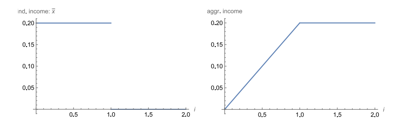
Individuals and aggregate income with mass one identical households
{Note: If mass of households was 2 instead of 1 the aggregate income would be $2\bar{x}$ and there would be twice as much individuals}\(L\) denotes households members who all supply one unit of time \(\rightarrow\) Aggregate labor supply = \(L*1\)
\(L\) is fully inelastic (vertical line in w - L graph) and theoretically could also change over time, i.e. \(L(t)\)
\(a(t)\) denotes wealth which is lent to firms
Quantities per household coincide with aggregate quantities
Household income ( = aggregate income): \(X(t)=w(t)L+r(t)a(t)\) (\(r:\) interest rate; \(w:\) wage rate; \(t\in[0,\infty]\) time)
Every household is assumed to maximize its life-time utility\ \[U = \int_{0}^{\infty} u\big[C(t)\big] \cdot e^{-\rho t} \, dt \quad \text{with} \quad \rho > 0\] whereas \(\rho\) is the time preference rate, \(u\) is the instant utility, \(C\) is consumption
The higher \(\rho\), the faster \(e^{-pt}\) converges to zero:

1.1.2 Households: Instantaneous utility
Households have the instantaneous utility function (Instantaneous means that the utility function describes satisfaction at a single moment, not aggregated over a period): \[u\big[C(t)\big] = \frac{C(t)^{1-\sigma} - 1}{1 - \sigma} \quad \text{with} \quad \sigma > 0\]
Alternative formulation : \[u(C) = \begin{cases} \frac{C^{1-\sigma}}{1-\sigma} & \text{for } \sigma \neq 1 \\ \ln(C) & \text{for } \sigma = 1 \end{cases}\]
- \(u\) is compatible with steady state growth
- Life-time utility (welfare) functions implies CIES: constant intertemporal elasticity of substitution
- Elasticity of marginal utility w.r.t. C ( \(\rightarrow\) \(C\) is increased by 1%, how does \(u'(C)\) change?) is constant: \[ \eta_{u'(C),C} := \frac{du'(C)/u'(C)}{dC/C} = \frac{du'(C)/dC \cdot C}{u'(C)} = \frac{\textcolor{blue}{u''(C)} \cdot C}{\textcolor{red}{u'(C)}} =\frac{\textcolor{blue}{-\sigma C^{-\sigma-1}}*C}{\textcolor{red}{C^{-\sigma}}}=-\sigma < 0 \] The elasticity is the relative change in \(u'\) divided by the relative change in \(C\).
The parameter \(\sigma\) is a measure for concavity of the utility function: The higher \(\sigma\), the more concave is \(u(C)\)
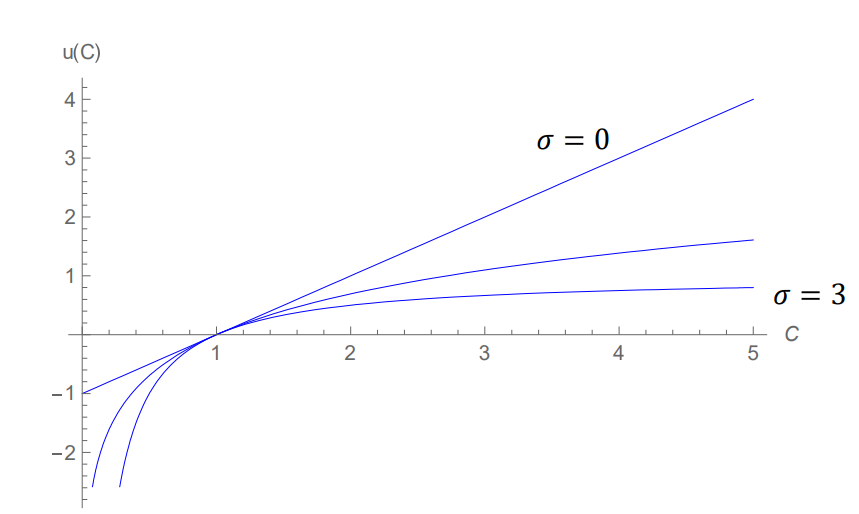
\(\sigma = 0 \longrightarrow\) marginal utility does not change with consumption, i.e. \(u(C)\) is a straight line
Infinite willingness to substitute consumption intertemporally
Consumer is indifferent between different consumption profiles (apart from discounting with \(e^{-pt}\) in lifetime utility function)
\(\sigma > 0 \longrightarrow\) marginal utility declines with consumption: \(u(C)\) is concave \(\rightarrow\) Desire to smooth consumption over time
Example: Life-time utility over three periods
Which consumption profile is preferable: the red or the blue one?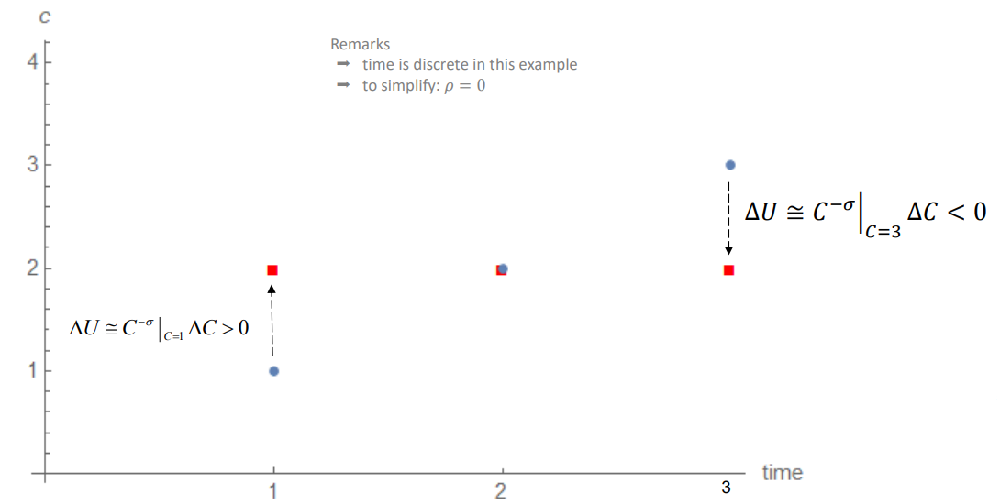
- The red consumption profile is preferable as it smoothens consumption over time compared to the blue profile.
- Marginal utility is given by: \(u'(C)=C^{-\sigma}\) and thus, is decreasing in \(C\). The more concave the utility function the higher the incentive for consumption smoothing.
- In the blue profile consumption at \(t=3\) is \(C=3\) and at \(t=1\) it is \(C=1\); Thus we have \(u'(3)<u'(1)\)\ $$ Decreasing consumption in \(t=3\) by \(1\) and increasing consumption in \(t=1\) by \(1\) increases life-time utility
1.1.3 Households: Dynamic optimization problem
Each household solves the following problem to optimize welfare / life-time utility:
\[ \max_{\{C(t)\}} \int_{0}^{\infty} \frac{C(t)^{1-\sigma} - 1}{1 - \sigma} e^{-\rho t} dt \]
\[ \text{s.t. } \dot{a}(t) = w(t)L + r(t)a(t) - C(t) \]
- Initial condition: \(a(0) = a_0\)
- Terminal condition (no ponzi game condition): \(\lim_{t \to \infty} e^{-R(t)} a(t) \geq 0\)
- We have one control variable \(C(t)\), and one state variable \(a(t)\)
- The control variable is chosen by the household, the state variable depends on the control variable. While the control variable can be freely chosen and could theoretically jump, the state variable does not and is more inert (träge).
- The flow budget constraint is a first order, linear, differential equation.
\ We set up the Hamiltonian function for our optimization problem: \[H := \underbrace{\frac{C^{1-\sigma} - 1}{1 - \sigma}}_{\substack{\text{instantaneous objective} \\ \text{function}}} + \underset{\substack{\text{current value} \\ \text{shadow price}}}{\lambda} \quad \underbrace{(wL + ra - C)}_{\substack{\text{RHS of dynamic} \\ \text{constraint}}}\] First order conditions (Note that (4) is taken as given here, general form is: \(\dot{\lambda}+\frac{\partial H}{\partial x}=\rho \lambda\)): \[\begin{align} \frac{\partial H}{\partial C} &= C^{-\sigma} - \lambda = 0 \tag{3} \ $$10pt] \dot{\lambda} &= -\frac{\partial H}{\partial a} + \rho \lambda = -\lambda r + \rho \lambda \tag{4} \\[10pt] \lim_{t \to \infty} &\underbrace{e^{-\rho t} \lambda(t)}_{\substack{\text{present-value} \\ \text{shadow price}}} a(t) = 0 \tag{TVC} \end{align}\]
- The TVC states that present value of wealth, valued at shadow price \(\lambda(t)\), at infinite time must approach zero
Keynes-Ramsey rule (KRR) of optimal consumption: \(\hat{C}:=\frac{\dot{C}}{C}=\frac{1}{\sigma}(r-\rho)\) \Growth rate \(\hat{C} > 0\), whenever \(r>\rho\)
- The interest rate \(r\) is the premium the household receives for reducing \(C\) today by \(1\) unit and increasing it tomorrow by \(1\) unit, i.e. \(r\) is the opportunity cost of consumption today. Higher r gives incentive to postpone C so that higher level of \(C\) can be financed tomorrow.
- The time preference rate \(\rho\) is the premium the household demand to be marginally indifferent between \(C\) today and tomorrow. High \(\rho\) captures impatience and reduces \(C\), i.e. the household wished to consume today rather than tomorrow.
- The intertemporal elasticity of substitution \(\sigma\) captures the households willingness to substitute consumption intertemporally. Small \(\sigma\) implies that \(u'(C)\) does not fall strongly as \(C\) increases, i.e. the household has a high willingness to substitute consumption intertemporally and \(r>\rho\) unfolds strong incentives to substitute consumption intertemporally
\(\longrightarrow\) If \(r >\rho\) it seems rational to postpone consumption into the future; The smaller \(\sigma\), the stronger does this incentive unfold.
1.1.3.1 Note on macroeconomic equilibrium:
Steady state implies that \(c:=\frac{C}{Y}\) remains constant, hence \(\hat{C}=\hat{Y}\) in the long run. KRR demonstrates that \(r\) plays prominent role in determining \(\hat{C}\) and thus \(\hat{Y}\). As \(r=F'(K)-\delta\) anything that affects \(F'(K)\) (MPK) impacts the growth rate. If \(F'(K)>0\) and \(F''(K)<0\) MPK diminishes as capital is being accumulated until \(r=\rho\). Economic growth is, then, only possible if \(F'(K)-\delta>\rho\).
Derivation of the Keynes-Ramsey rule (KRR)
Take equation (3), rearrange and differentiate (chain rule!): \[\frac{d}{dt}(C^{-\sigma}) = \frac{d}{dt}(\lambda) \quad \Leftrightarrow \quad -\sigma C^{-\sigma - 1} \dot{C} = \dot{\lambda}\] Plug in (4) \[ -\sigma C^{-\sigma - 1} \dot{C} = -\lambda r+\rho \lambda \] Divide by \(C^{-\sigma}=\lambda\) (3): \[ \frac{-\sigma C^{-\sigma - 1} \dot{C}}{C^{-\sigma}} = \frac{-\lambda r+\rho \lambda}{\lambda}\] Rearrange: \[-\sigma C^{- 1} \dot{C} = - r+\rho \] \[\hat{C}=\frac{\dot{C}}{C}=\frac{1}{\sigma}(r-\rho)\] Another method would be to take \(ln\) of equation \((3)\) and take the derivative.
1.1.4 Households: Reduced form of the Ramsey model
The reduced form of the Ramsey model comprises two linear differential equations in (c(t)) and (a(t)) with time-varying coefficients:
\[\begin{align} \dot{c}(t) &= c(t) \frac{r(t) - \rho}{\sigma} \label{eq:c_dot} \\ \dot{a}(t) &= r(t)a(t) + w(t) - c(t) \label{eq:a_dot} \end{align}\]
1.1.5 Households: Transversality condition (TVC) vs. No-Ponzi-Game condition (NPGC)
Transversality condition: Shadow value of wealth in present value terms is: \(e^{-\rho t}\lambda(t)a(t)\) and must approach zero for \(t\rightarrow \infty:\) \[lim_{t\rightarrow\infty}e^{-\rho t}\lambda(t)a(t)=0\] with \(\lambda(t)=u'(C)\): \[\longrightarrow lim_{t\rightarrow\infty}e^{-\rho t}u'(C)a(t)=0 \quad (TVC\#1)\] with $(t)=(0)e^{(-r)t} $: \[\longrightarrow lim_{t\rightarrow\infty}e^{-r t}\lambda(0)a(t)=0 \quad (TVC\#2)\]
- TVC#1 is violated if its greater than zero, which means that life-time utility can be increased by saving less.
- TVC#2 is violated if the No-Ponzi-Game condition is violated
No-Ponzi-Game condition: Wealth in the “far future” cannot have negative present value, i.e. \(lim_{t\rightarrow\infty}e^{-rt}a(t)<0\) is excluded: \[lim_{t\rightarrow\infty}e^{-rt}a(t)\geq0 \quad (NPGC)\] If household runs into debt, \(a(t)<0\), this debt must rise asymptotically at a rate less than the real interest rate, implying \(lim_{t\rightarrow\infty}e^{-rt}a(t)=0\). .
Difference between TVC and NPGC
The TVC is an optimality condition (no wealth when you die) \
The NPGC is an external condition (you cannot die with debt)
1.2 Firms
1.2.1 Firms: Setup
Mass one of identical firms produce a homogenous final output good Y that can be used for consumption or investment, using Cobb-Douglas production technology: \[Y=\underbrace{A}_{\substack{captures\space TFP \\ Solow\space residual}}\quad \underbrace{K^\alpha}_{\substack{physical \space capital}}\quad \underbrace{L^{1-\alpha}}_{\substack{labor\space input}}\] Firms maximize profits \(\pi=Y-wL-(r+\delta)K\) under perfect competition, implying they hire \(L\) and rent \(K\) such that: \[\begin{equation} w = (1 - \alpha) A K^{\alpha} L^{-\alpha} = (1 - \alpha) \frac{Y}{L} \end{equation}\]
\[\begin{equation} r + \delta = \alpha A K^{\alpha - 1} L^{1 - \alpha} = \alpha \frac{Y}{K} \quad \text{(user cost of capital)} \end{equation}\] Note: This is similar to the Solow model; Final output is chosen as numeraire, i.e. its price is set equal to unity \((p_Y=1)\).
Derivation of the FOCs for the firm
The firm maximizes profit \(\pi = A K^\alpha L^{1-\alpha} - wL - (r + \delta)K\). The First-Order Conditions (FOCs) are:
- Labor: \(\frac{\partial \pi}{\partial L} = (1 - \alpha) A K^\alpha L^{-\alpha} - w = 0 \implies w = (1 - \alpha) \frac{Y}{L}\)
- Capital: \(\frac{\partial \pi}{\partial K} = \alpha A K^{\alpha-1} L^{1-\alpha} - (r + \delta) = 0 \implies r + \delta = \alpha \frac{Y}{K}\)
Factor Shares: Due to Constant Returns to Scale (CRS), total income is exhausted by factor payments \(\(Y = wL + (r+\delta)K\)):
- Labor Share: \(\frac{wL}{Y} = \frac{(1-\alpha)Y}{Y} = 1 - \alpha\)
- Capital Share: \(\frac{(r+\delta)K}{Y} = \frac{\alpha Y}{Y} = \alpha\)
Note: Land is implicitly included in the capital share \(\alpha\).
Share of capital
The gross capital stock \(K\) is defined as the value of all fixed assets still in use. Fixed assets are all produced assets that are used repeatedly or continuously in the production process for more than a year. Alpha is approximatly \(0.3\).
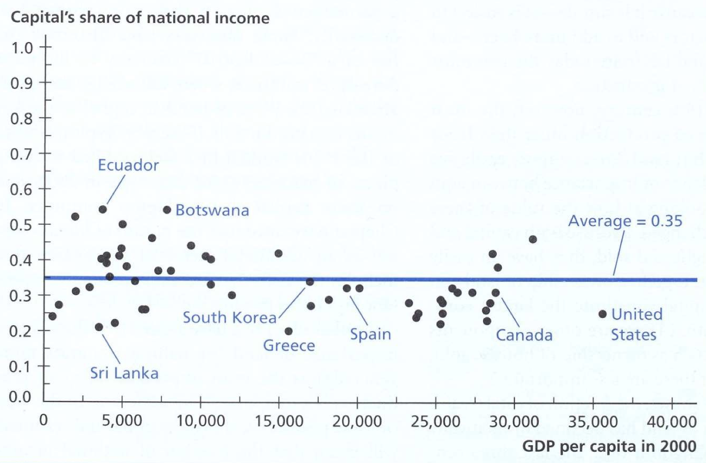
1.3 Market equilibrium and national income
Definition of general equilibrium:\\ The general equilibrium consist of paths for quantities \([Y(t),K(t),a(t),C(t)]_{t=0}^{\infty}\) and prices \([w(t),r(t)]_{t=0}^{\infty}\), such that:
- Final good producers maximize profits \(\pi = Y - wL - (r + \delta)K\) at each \(t \in [0, \infty]\)
- HH maximize life-time utility \(U = \int_{0}^{\infty} u(C)e^{-\rho t}dt\)
- Capital market clears, i.e. \(a(t) = K(t)\) at each \(t \in [0, \infty]\)
- Labor market clears, i.e. \(L^{S}(t) = L^{D}(t)\) at each \(t \in [0, \infty]\)
- Goods market clears, i.e. \(Y(t) = I(t) + C(t)\) at each \(t \in [0, \infty]\)
National income \(X\) equals aggregate production net of depreciation, which is shown here: [ X = wL + rK = {} L + {} K = Y - K $$
1.3.1 Market equilibrium illustration
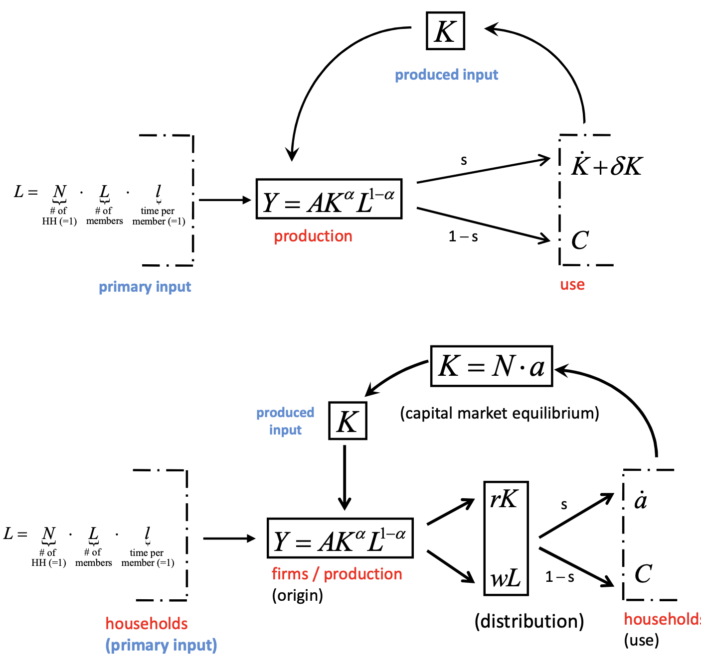
Interpretations:
- Robinson-Crusoe economy: Consumer-producer household accumulates output not consumed and thereby builds up a stock of physical capital. Stock of capital is used to produce output.
- Market economy: HH accumulate wealth (measured in terms of \(Y\)), which is rented out to firms. Firms employ this capital in the production of final output.
1.4 Dynamics
Definition: Steady State and Balanced Growth Path
A steady state is a situation in which all relevant economic variables are constant over time, i.e., for any variable \(x_t\), we have \(x_{t+1} = x_t\) and \(\dot{x}=0\). \\ A balanced growth path is a situation in which the growth rates of all relevant economic variables are constant over time, i.e. \(\hat{x}=const.>0\)
- A zero-growth steady state is referred to simply as a steady state.
- A positive-growth steady state is referred to as a balanced growth path.
The dynamics of the economy are described by: \[\dot{C} = \frac{C}{\sigma}\left(\alpha K^{\alpha - 1} L^{1-\alpha} - \delta - \rho \right)\] \[\dot{K} = K^{\alpha} L^{1-\alpha} - \delta K - C\] Boundary condition: \(K(0)=K_0\) and \(C(\infty)=\tilde{C}\), whereas the second boundary condition substitutes the TVC\\
Derivation of the ODE system of the Ramsey model
The system is derived by combining the household’s optimization with the firm’s production:
1. The Consumption Euler Equation (KRR): The standard Keynes-Ramsey Rule for CRRA utility is: \[\frac{\dot{C}}{C} = \frac{1}{\sigma}(r - \rho)\] From the firm’s FOC, we know the real interest rate is the marginal product of capital net of depreciation:\ \(r = \frac{\partial Y}{\partial K} - \delta = \alpha A K^{\alpha-1} L^{1-\alpha} - \delta\). Substituting this into the KRR: \[\dot{C} = \frac{C}{\sigma} \left( \alpha K^{\alpha-1} L^{1-\alpha} - \delta - \rho \right)\]
2. The Equation of Motion for Capital: From the aggregate resource constraint (Slide 71 logic):
- Output Identity: \(Y = C + I\)
- Capital Accumulation: \(\dot{K} = I - \delta K\)
- Production Function: \(Y = K^{\alpha} L^{1-\alpha}\)
Combining these gives \(\dot{K} = Y - C - \delta K\). Substituting the production function: \[\dot{K} = K^{\alpha} L^{1-\alpha} - \delta K - C\] \(\dot{K}\) is defined to be net investment, we have: \(\dot{K}=Y-C-\delta K\) \ \(\dot{K}+\delta K\) is defined to be gross investment, we have: \(\dot{K}+\delta K=Y-C\)
Alternative (market economy) version of the $\dot{K}$ equation
\ Following the national accounting identities and budget constraints:
- Wealth Equilibrium: \(a(t) = K(t) \implies \dot{a}(t) = \dot{K}(t)\)
- Household Budget: \(\dot{a}(t) = w(t)L + r(t)a(t) - C(t)\)
- Accounting Identity: Total factor income equals net output: \(w(t)L + r(t)K(t) = Y(t) - \delta K(t)\)
Substituting the identity into the budget constraint gives: \[\dot{K} = \underbrace{Y(t) - \delta K(t)}_{wL + rK} - C(t)\] Plugging in the production function \(Y = K^\alpha L^{1-\alpha}\): \[\dot{K} = K^{\alpha} L^{1-\alpha} - \delta K - C\]
The zero-growth steady state is given by: \[\tilde{K} = \left(\frac{\alpha}{\delta + \rho}\right)^{\frac{1}{1-\alpha}} L \quad\quad\quad\quad \tilde{C} = \tilde{K}^{\alpha} L^{1-\alpha} - \delta \tilde{K}\]
Derivation of the steady state
The steady state \((\tilde{K}, \tilde{C})\) is found where the system dynamics settle \((\dot{K}=0, \dot{C}=0)\):
Setting the capital motion equation to zero: \[K^{\alpha} L^{1-\alpha} - \delta K - C = 0 \implies C = K^{\alpha} L^{1-\alpha} - \delta K\] This is a hump-shaped curve in the \((K,C)\)-plane, representing levels of consumption that keep capital constant.
Setting the consumption motion equation to zero: \[\frac{C}{\sigma}(\alpha K^{\alpha - 1} L^{1-\alpha} - \delta - \rho) = 0\] Ignoring the trivial case \(C=0\), we solve for \(K\): \[\alpha K^{\alpha - 1} L^{1-\alpha} = \delta + \rho \implies K^{\alpha - 1} = \frac{\delta + \rho}{\alpha L^{1-\alpha}}\] \[\tilde{K} = \left( \frac{\alpha}{\delta + \rho} \right)^{\frac{1}{1-\alpha}} L\] This is a vertical line in the \((K,C)\)-plane at \(K = \tilde{K}\).
3. Steady State Consumption: Substitute \(\tilde{K}\) into the \(\dot{K}=0\) equation: \[\tilde{C} = \tilde{K}^{\alpha} L^{1-\alpha} - \delta \tilde{K}\]
Extensions (Balanced Growth Path): If \(L\) or \(A\) grow, we define variables in efficiency units \(k = \frac{K}{AL}\) and \(c = \frac{C}{AL}\):
- With \(L\) growth (\(n\)): Replace \(\delta\) with \((\delta + n)\) in the \(\tilde{K}\) formula.
- With \(A\) growth (\(g\)): Replace \(\rho\) with \((\rho + \sigma g)\) and \(\delta\) with \((\delta + n + g)\).
Typical errors with respect to steady state and balanced growth path
1. Confusing steady state with BGP: A steady state (\(\dot{x} = 0\)) and a balanced growth path (\(\hat{x} = \text{const.} > 0\)) are not the same. A steady state is a special case of a BGP where the constant growth rate happens to be zero.
2. Assuming a steady state exists under technological progress: In models with technological progress (\(\dot{A}/A = x > 0\)), a classical steady state generally does not exist. Assuming \(\tilde{K} = \text{const.}\) yields a contradiction, since the solution for \(\tilde{K}\) depends on \(AL\), which is growing.
3. Forgetting what is constant in each concept:
- Steady state: the level is constant (\(\dot{x} = 0\))
- BGP: the growth rate is constant (\(\hat{x} = \text{const.} > 0\)), while the level is still growing
4. Skipping the proof when showing non-existance of a steady state The correct way to rule out a steady state is to assume it exists, derive what it implies, and show this leads to a contradiction - not to simply assert it does not exist.
1.5 Phase Diagram
The phase diagram illustrates the uniqueness of the Equilibrium Growth Path (EGP). It maps the joint dynamics of capital \(K\) and consumption \(C\) to show how the economy converges to a long-run equilibrium. The equilibrium growth path is characterized by the intersection of the \(\dot{K}=0\) and \(\dot{C}=0\). This yields the unique interior steady state (Point A), at which we have steady-state values \(\tilde{C}\) and \(\tilde{K}\).
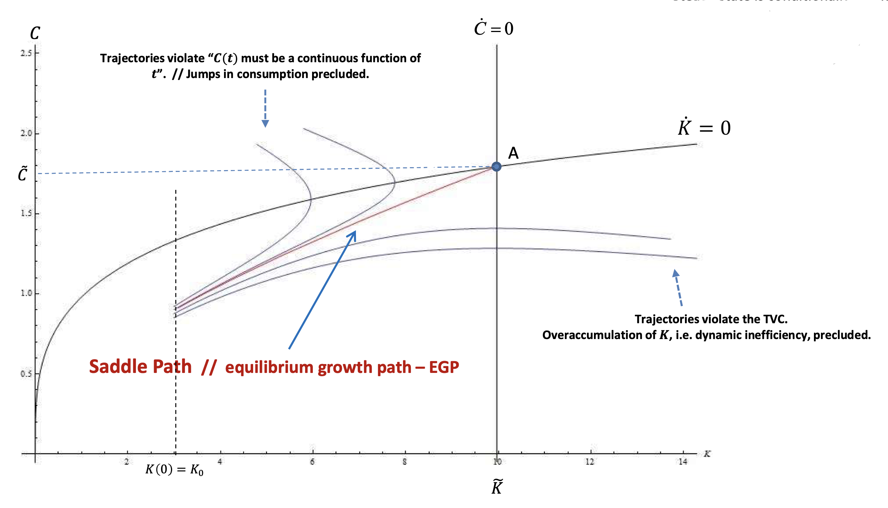
Phase Diagram of the Ramsey Model
Unique Initial Consumption: Given a pre-determined initial capital stock \(K(0) = K_0\), there is only one unique choice for initial consumption \(C(0)\) such that the economy evolves along the unique EGP towards the steady state.
Saddle Point Stability: The steady state is saddle point stable (or conditionally stable). The system only converges if the initial \(C(0)\) is chosen precisely on the stable manifold (the saddle path). Any initial value not on this path causes the system to diverge.
Divergence Paths and Boundary States: The \(\dot{K}=0\) locus is an inverted parabola starting at \((0,0)\) and ending at \((\bar{K}, 0)\), where \(\bar{K}\) is the maximum sustainable capital stock. While \((0,0)\) and \((\bar{K},0)\) are technically steady states, they are ignored as they imply zero consumption.
Excessive Saving Logic: If initial consumption \(C(0)\) is set too low (below the saddle path), the household saves an excessive portion of its income. This leads to:
Rapid capital accumulation in the short run.
Eventually, the marginal productivity of capital falls due to diminishing returns.
Because the household is not consuming enough to satisfy the Transversality Condition (TVC), they continue to accumulate capital until it reaches the point \((\bar{K}, 0)\), where all production is used simply to replace depreciating capital (\(\delta K = Y\)), leaving nothing left for consumption.
Note: This path is ruled out by the household’s optimization because it violates the Transversality Condition; it is not optimal to accumulate capital forever and never consume it.
Why Exactly One Trajectory? Ruling Out All Others
The phase diagram contains infinitely many trajectories starting from \(K_0\), but only one survives the household’s optimality conditions. The argument has two parts: trajectories above the saddle path are ruled out by the TVC, trajectories below the saddle path are ruled out either by the TVC or by feasibility.
Trajectories above the saddle path (initial \(C(0)\) too high).
- Initial consumption is so high that the household consumes more than what is sustainable. Capital is run down (or grows too slowly) while consumption keeps rising.
- The trajectory crosses the \(\dot K = 0\) locus and heads toward the \(C\)-axis: \(K \to 0\), \(C\) keeps rising.
- At some finite time, \(K\) hits zero and \(C\) would have to jump down discontinuously, since with no capital there is no production. This violates the requirement that \(C(t)\) be a continuous function of time (jumps in consumption are precluded by the optimization).
- Equivalently: the present-value shadow price of wealth \(e^{-\rho t}\lambda(t) a(t)\) becomes negative or fails to converge to zero, violating the TVC.
Trajectories below the saddle path (initial \(C(0)\) too low).
- The household saves an excessive portion of income. Capital accumulates rapidly while consumption stays low.
- Eventually the marginal product of capital falls below \(\rho + \delta\) due to diminishing returns. The economy is now in the dynamically inefficient region: it accumulates capital that yields lower returns than what discounting demands.
- The trajectory drifts toward \((\bar K, 0)\), where all output is used to replace depreciation (\(\delta K = Y\)) and consumption is permanently zero.
- Although feasible, this path violates the TVC: \(\lim_{t\to\infty} e^{-\rho t}\lambda(t) a(t) > 0\), meaning the household dies with positive wealth. Lifetime utility could be raised by consuming more, so this path is not optimal.
Optimal unique \(C(0)\).
- Only the saddle path satisfies (i) continuity of \(C(t)\), (ii) feasibility (\(K \geq 0\) at all times), and (iii) the TVC. This pins down a unique \(C(0)\) for any given \(K_0\). The saddle path is therefore the balanced growth path: the household’s optimization selects it from the continuum of feasible trajectories.
- Mathematical reason: Linearizing the dynamic system around the steady state yields two eigenvalues of opposite sign (\(\mu_1 < 0 < \mu_2\)). The general solution is \(z(t) = \alpha_1 e^{\mu_1 t} v_1 + \alpha_2 e^{\mu_2 t} v_2\). The TVC forces \(\alpha_2 = 0\) (otherwise the unstable mode explodes), and \(\alpha_1\) is then pinned down by the initial condition \(K(0) = K_0\). Saddle-path stability is thus a direct consequence of having one predetermined state (\(K\)) and one free jump variable (\(C\)).
Numerical solution of the Ramsey model
Numerical solution of the Ramsey model with the following differential equations: \[\dot{k}(t) = k(t)^\alpha - \delta\, k(t) - c(t)\] \[\dot{c}(t) = c(t)\,\bigl[\alpha\, k(t)^{\alpha-1} - \delta - \rho\bigr]\]
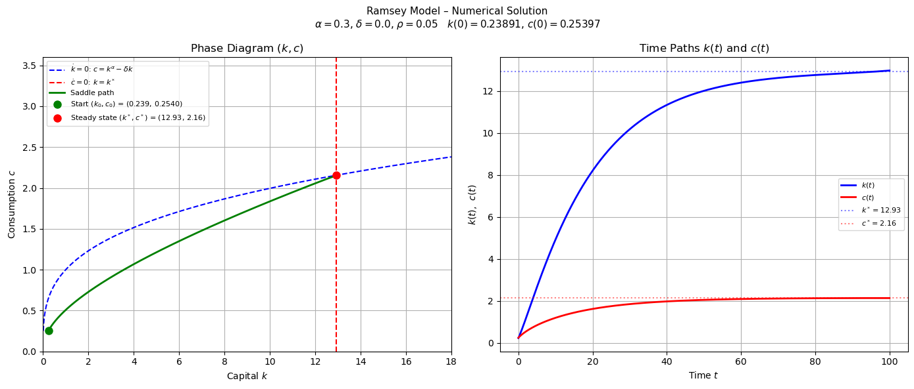
1.6 Social planner’s solution
Social planner maximizes life-time utility of typical household by solving: \[\max_{\{C\}} \int_{0}^{\infty} \frac{C^{1-\sigma} - 1}{1-\sigma} e^{-\rho t}\, dt\] \[\text{s.t. } \dot{K} = K^{\alpha} L^{1-\alpha} - \delta K - C\] \[K(0) = K_0,\; K(t) \ge 0\] The equation for \(\dot{K}\) results from the resource constraint \(Y-\delta K=\dot{K}+C\) \\ Setting up the Hamiltonian for this problem gives us:
\[ H := \frac{C^{1-\sigma} - 1}{1 - \sigma} + \mu (K^{\alpha} L^{1-\alpha} - \delta K - C) \]
\[ H_{C} = C^{-\sigma} - \mu = 0 \]
\[ \dot{\mu} = -H_{K} + \rho \mu = -\mu \alpha K^{\alpha-1} L^{1-\alpha} + \mu \delta + \rho \mu \]
\\ The implied Keynes-Ramsey-Rule is:
\[ \frac{\dot{C}}{C} = \frac{1}{\sigma} \left( \alpha K^{\alpha-1} L^{1-\alpha} - \delta - \rho \right)\]
\\ The evolution of the economy is determined by the KKR, the flow budget constraint \((\dot{K} = K^{\alpha} L^{1-\alpha} - \delta K - C)\) and the initial and boundary conditions \((K(0)=K_0, \quad C(\infty)=\tilde{C})\)\\ Important Implications:
- Decentralized equilibrium aligns with the social planner’s solution, meaning the market equilibrium is the unique first-best outcome.
- This result stems from the assumption of a perfectly neoclassical economy (\(\rightarrow\) First theorem of welfare economics states that any competitive equilibrium is Pareto-efficient).
1.7 Technological progress
The following notation employs a exogenous and labor augmenting production function: \[Y=K^\alpha(AL)^{1-\alpha} \quad \quad with \quad A=A_0e^{xt},x\geq0\] Following the same steps (setting up the Hamiltonian and solving for the KKR) yields a very similar dynamic system to describe the economy: \[\begin{equation} \dot{C} = \frac{C}{\sigma} \left( \alpha K^{\alpha-1} (AL)^{1-\alpha} - \delta - \rho \right) \label{KRR1.6} \end{equation}\] \[\begin{equation} \dot{K} = K^{\alpha} (AL)^{1-\alpha} - \delta K - C \label{Kdot1.6} \end{equation}\]
Derivation: Steady state with labor-augmenting endogenous technological advancement
We consider the growth rates of $C$ and $K$, using equations \eqref{KRR1.6} and \eqref{Kdot1.6}: \\
$$\hat{C} &= \frac{\textcolor{red}{\alpha K^{\alpha-1}(AL)^{1-\alpha}} - \delta - \rho}{\sigma}$$
$$\hat{K} &= \underbrace{K^{\alpha-1}(AL)^{1-\alpha}}_{\textcolor{blue}{Y/K}} - \delta - \textcolor{blue}{C/K}$$\\
Consider the RHS of $\hat{C}$: Only $\alpha K^{\alpha-1}(AL)^{1-\alpha}$ changes over time, taking growth rates (by ln-differentiating) and setting such equal to zero gives: $(\alpha-1)\hat{K}+(1-\alpha)\hat{A}=0\quad \Leftrightarrow \quad \hat{K}=\hat{A}$\\
Consider the RHS of $\hat{K}:$ We know that $\hat{K}=\hat{A}$ leads to $\alpha K^{\alpha-1}(AL)^{1-\alpha}=const.$, thus $K^{\alpha-1}(AL)^{1-\alpha}=Y/K=const.$.\\
Now for $C/K$ to best $const.$ it must be that $\hat{C}=\hat{K}$.\\\\
In summary we get: $\hat{Y}^*=\hat{K}^*=\hat{C}^*=\hat{A}^*=x$, whereas $x$ is the growth rate of $\hat{A}$ by construction. \\\\
Note: With labor growth (i.e. growing population) we'd have $\hat{Y}=\hat{L}+\hat{A}=n+x$1.7.1 Normalization of variables
We transform variables so that a dynamics system turns into system that converges towards a stationary solution: Let \(X(t)\) be a variable that grows in the long run at rate \(g\), the normalized variable is given by \(x(t)=X(t)/e^{gt}\). This yields, by construction, \(lim_{t\to\infty}x(t)=const.\)\\ For the model above the normalization works as follows: \[c : = \frac{\color{red}C}{e^{(x+n)t}} = \frac{C}{AL} \quad \text{and} \quad k := \frac{\color{black!60!black}K}{e^{(x+n)t}} = \frac{K}{AL}\] This transformation ‘removes’ the growth rate of labor \(n\) and technological progress \(x\) from our variables: \(\hat{c}=\hat{C}-\hat{L}-\hat{A}=0\) and \(\hat{k}=\hat{K}-\hat{L}-\hat{A}=0\)\\ The dynamics system described by \(\eqref{Kdot1.6}\) and \(\eqref{KRR1.6}\) in normalized variables: \[\dot{c} = \frac{c}{\sigma} \left[ \alpha k^{\alpha-1} - (\delta + \rho + x \sigma) \right]\]
\[\dot{k} = k^{\alpha} - c - (x + \delta)k\]
1.8 Overview of cases and tasks for the Ramsey model
2 Overlapping Generations Model
Comparison of Ramsey and OLG
Note: If an representative agent exists a change in distribution between household does not change economic variables
2.1 General Setup: Households and Firms
2.1.1 Households
Individuals live for two periods: Youth \((i=y)\) during which one unit of labor is supplied (inelastically) and income is used for consumption now or savings for retirement \((i=o)\) during which the individual has to live off savings and interest payments. Life-time utility of an individual \((j)\) born at \(t\in \mathbb{Z}\) is given by: \[U_t = \frac{(C_{y,t})^{1-\sigma} - 1}{1-\sigma} + \frac{1}{1+\rho} \cdot \frac{(C_{o,t+1})^{1-\sigma} - 1}{1-\sigma}, \quad \sigma > 0, \ \rho \ge 0\] The workforce is denoted by \(L_t:=L_{y,t}\) and grows at rate \(n\geq0\):
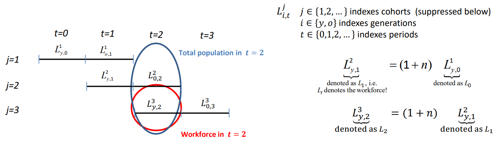
Notice that an individual does not gain utility by inheriting wealth to its children.
2.1.2 Firms and Capital Accumulation
Production is given by a constant returns to scale (CRS), i.e. \(\lambda f(K,L)=f(\lambda K,\lambda L)\) technology with exogenous technological growth: \[Y_t=F(K_t,A_tL_t) \quad \quad A_t=(1+g)A_{t-1} \quad g\geq0\] Setting \(\lambda=1/(A_tL_t)\) we obtain the intensive production function \(y_t=f(k_t)\), with \(y_t:=Y_t/(A_t L_t)\) and \(k_t:=K_t/(A_tL_t)\)\\ Product and factor markets are perfectly competitive, i.e. firms make no profits in equilibrium and the interest rate is: \(r_t=f'(k_t)\). Note that here, the depreciation rate is set to 0, i.e. \(\delta=0\). Real wage rate per \(A_tL_t\) is: \(w_t=f(k_t)-k_tf'(k_t)\) \\ The capital stock is owned by the old and labor is supplied by the young. The aggregate capital stock in period t is given by: \(K_t=S_{t-1}=\underbrace{L_{t-1}\bigl(w_{t-1}A_{t-1}-C_{y,t-1}\bigr)}_{\text{savings by the young generation at } t-1}\)
2.2 Household Dynamics
2.2.1 Households: Behaviour
Maximization Problem of individual born at period \(t\):
Timing of events
Setting up the Lagrangian and solving for FOC: \[ \mathcal{L} := \frac{(C_{y,t})^{1-\sigma} - 1}{1-\sigma} + \frac{1}{1+\rho} \cdot \frac{(C_{o,t+1})^{1-\sigma} - 1}{1-\sigma} + \lambda_t \left[ w_t A_t - \left( C_{y,t} + \frac{C_{o,t+1}}{1 + r_{t+1}} \right) \right] \]
\[FOC1: \quad \frac{\partial \mathcal{L}}{\partial C_{y,t}} = (C_{y,t})^{-\sigma} - \lambda_t = 0 \;\Rightarrow\; (C_{y,t})^{-\sigma} = \lambda_t \]
\[ FOC2: \quad \frac{\partial \mathcal{L}}{\partial C_{o,t+1}} = \frac{1}{1+\rho} (C_{o,t+1})^{-\sigma} - \lambda_t \frac{1}{1 + r_{t+1}} = 0 \;\Rightarrow\; (C_{o,t+1})^{-\sigma} = \frac{1+\rho}{1 + r_{t+1}} \lambda_t \]
\[ FOC3: \quad \frac{\partial \mathcal{L}}{\partial \lambda} = w_t A_t - \left( C_{y,t} + \frac{C_{o,t+1}}{1 + r_{t+1}} \right) \]
Dividing FOC2 by FOC1 yields the Euler Equation (analogue to two period discrete time Keynes-Ramsey rule): \[\frac{(C_{o,t+1})^{-\sigma}}{(C_{y,t})^{-\sigma}} = \frac{1+\rho}{1+r_{t+1}} \implies \frac{C_{o,t+1}}{C_{y,t}} = \left( \frac{1+r_{t+1}}{1+\rho} \right)^{1/\sigma}\]
- Consumption increases whenever \(r_{t+1}>\rho\)
- Curvature of households utility function, i.e. intertemporal elasticity of substitution (given by \(\sigma\)) determines how much consumption varies in response to changes in \(r_{t+1}-\rho\). Note: This is also similar to the KRR in the Ramsey Model)
- Log-linearization yields \(\hat{C}\approxeq(r-\rho)/\sigma\)
Together with the budget constraint, the Euler equation describes consumption with the implied consumption function: \[C_{y,t} = [1 - s(r_{t+1})] w_t A_t \quad \text{with} \quad s(r_{t+1}) = \frac{(1+r_{t+1})^{(1-\sigma)/\sigma}}{(1+\rho)^{1/\sigma} + (1+r_{t+1})^{(1-\sigma)/\sigma}}\]
Derivation of the savings rate and consumption
**1. Euler Equation \& Budget Constraint** \\
Multiple both sides of the Euler equation by $C_{y,t}$ and and get $C_{o,t+1} = \left( \frac{1+r_{t+1}}{1+\rho} \right)^{1/\sigma} C_{y,t}$ and substitute that into\\ $0 = w_t A_t - \left( C_{y,t} + \frac{C_{o,t+1}}{1+r_{t+1}} \right)$:\[ 0 = w_t A_t - C_{y,t} \left[ 1 + \frac{(1+r_{t+1})^{1/\sigma} (1+\rho)^{-1/\sigma}}{1+r_{t+1}} \right] \]
\textbf{2. Solve for $C_{y,t}$} \\
Using the identity $\frac{(1+r_{t+1})^{1/\sigma}}{1+r_{t+1}} = (1+r_{t+1})^{\frac{1-\sigma}{\sigma}}$:\[ C_{y,t} \left[ \frac{(1+\rho)^{1/\sigma} + (1+r_{t+1})^{\frac{1-\sigma}{\sigma}}}{(1+\rho)^{1/\sigma}} \right] = w_t A_t \]
\[ C_{y,t} = \underbrace{\frac{(1+\rho)^{1/\sigma}}{(1+\rho)^{1/\sigma} + (1+r_{t+1})^{(1-\sigma)/\sigma}}}_{\text{consumption rate } 1-s} w_t A_t \]
**3. Savings Rate Derivation** \\
Since $s(r_{t+1}) = 1 - \frac{C_{y,t}}{w_t A_t}$:\[ s(r_{t+1}) = 1 - \frac{(1+\rho)^{1/\sigma}}{(1+\rho)^{1/\sigma} + (1+r_{t+1})^{(1-\sigma)/\sigma}} \]
\[ s(r_{t+1}) = \frac{(1+\rho)^{1/\sigma} + (1+r_{t+1})^{(1-\sigma)/\sigma} - (1+\rho)^{1/\sigma}}{(1+\rho)^{1/\sigma} + (1+r_{t+1})^{(1-\sigma)/\sigma}} \]
\[ \mathbf{s(r_{t+1}) = \frac{(1+r_{t+1})^{(1-\sigma)/\sigma}}{(1+\rho)^{1/\sigma} + (1+r_{t+1})^{(1-\sigma)/\sigma}}} \]
2.2.2 Households: Savings Rate
How does interest rate \(r\) impact savings rate \(s\)?
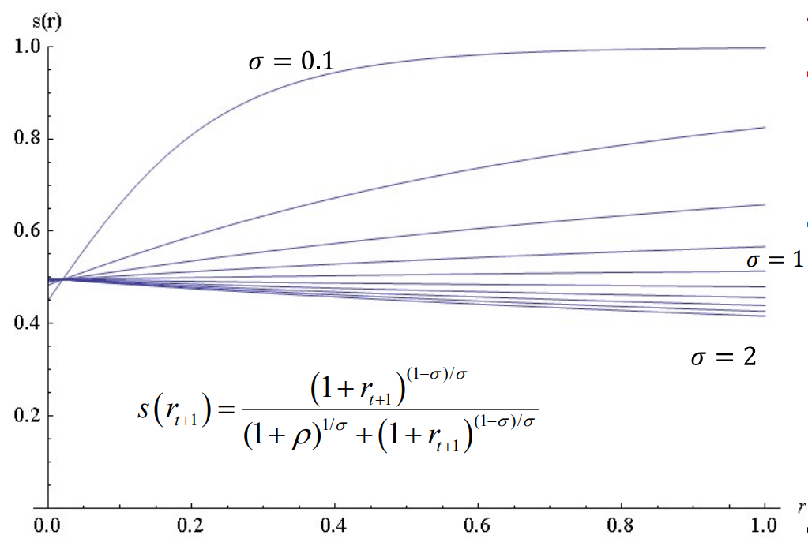
- As \(r\) increases, the opportunity costs of \(C_1\) go up. Hence, \(C_1\) is depressed and the savings rate increases: \(r \uparrow \to C_1 \downarrow \to \textcolor{red}{s \uparrow}\)
- As \(r\) increases, capital income (\(2^{nd}\) period of life) increases. Everything else the same, \(C_2\) increases (\(2^{nd}\) period income is completely consumed). Due to consumption smoothing, \(C_1\) (out of labor income) goes up, meaning that savings rate falls: \(r \uparrow \to (1+r)(wA - C_1) \uparrow \to C_2 \uparrow \to C_1 \uparrow \to \textcolor{blue}{s \downarrow}\)
The effect of \(\sigma\) is, that … .The savings rate \(s(r_{t+1})\) is increasing in \(r_{t+1}\) \(\Leftrightarrow\) $ (1+r_{t+1})^{(1-)/}$ is increasing in \(r_{t+1}\). \ This is shown by: \[\frac{\partial (1+r_{t+1})^{(1-\sigma)/\sigma}}{\partial r_{t+1}} = \frac{1-\sigma}{\sigma} (1+r_{t+1})^{(1-\sigma)/\sigma - 1} = \frac{1-\sigma}{\sigma} (1+r_{t+1})^{(1-2\sigma)/\sigma}\]\ We can look at three cases:
[label={}] - \[\frac{\partial s(r_{t+1})}{\partial r_{t+1}} > 0 \quad if \quad\sigma < 1\] - \[\frac{\partial s(r_{t+1})}{\partial r_{t+1}} = 0 \quad if \quad \sigma = 1\] - \[\frac{\partial s(r_{t+1})}{\partial r_{t+1}} < 0 \quad if \quad \sigma > 1\]
2.3 General equilibrium and national accounting
Definition General Equilibrium: A general (market) equilibrium for this economy consists of time paths for the and the such that
Final good producers maximize profits \(Y_t - r_t K_t - w_t A_t L_t\) at each \(t \in \{0, 1, \dots, \infty\}\)
Households maximize life-time utility
K_t = S_{t-1} = L_{t-1}(w_{t-1}A_{t-1} - C_{t-1}) ,, , t {0, 1, , }
L_t^S = L_t^D ,, , t {0, 1, , }
Goods market clears: \(Y_t + (1-\delta)K_t = I_t + C_t \ \forall \ t \in \{0, 1, \dots, \infty\}\) with \(C_t = C_{y,t}L_t + C_{o,t}L_{t-1}\) (and \(\delta = 0\) throughout this chapter)
\end{itemize} Goods market clearing condition \[ \underbrace{Y_t + (1-\delta)K_t}_{\text{goods available at end of } t} = C_{o,t} + C_{y,t} + I_t \] $$ Y_t + (1-{=0})K_t = {C_{o,t}}
{C{y,t}}
{I_t = S_t = K{t+1}} $$ \\
National income \(X_t\) () equals aggregate output \(Y_t\).
Noting \(w_t = (1-\alpha)k_t^\alpha\), \(r_t = \alpha k_t^{\alpha-1}\) and \(k_t := K_t / (A_t L_t)\) gives
\end{itemize} \[\begin{align*} X_t &= \underbrace{\underbrace{w_t}_{\text{wage per unit AL}} A_t L_t}_{\text{income of young agents}} + \underbrace{r_t K_t}_{\text{income of old agents}} = \underbrace{(1-\alpha) \left( \frac{K_t}{A_t L_t} \right)^\alpha}_{w} A_t L_t + \underbrace{\alpha \left( \frac{K_t}{A_t L_t} \right)^{\alpha-1}}_{r} K_t = K_t^\alpha (A_t L_t)^{1-\alpha} \end{align*}\]
2.4 Economy dynamics and capital accumulation
Aggregate capital in \(t+1\) is not-consumed output produced in \(t\) and depends on \(w_tA_t\) (wage income) and \(r_{t+1}\) (expected interest rate). It is given by: \[ K_{t+1} = \underbrace{s(r_{t+1})w_t A_t}_{\text{savings per young agent}} \underbrace{L_t}_{\text{\# young agents}} \implies \underbrace{k_{t+1}}_{K_{t+1} / A_{t+1}L_{t+1}} = s(r_{t+1})w_t \frac{A_t L_t}{A_{t+1} L_{t+1}} \] Since \(A_{t+1}=(1+x)A_t\) and \(L_{t+1}=(1+n)L_t\) we get: \[\begin{gather*} k_{t+1} = \frac{1}{(1+x)(1+n)} s(r_{t+1}) w_t \ $$2ex] \text{Plug in competitive factor prices for $r_t$ and $w_t$} \\ k_{t+1} = \frac{1}{(1+x)(1+n)} s \left[ \underbrace{f'(k_{t+1})}_{r_{t+1}} \right] \left[ \underbrace{f(k_t) - k_t f'(k_t)}_{w_t} \right] \end{gather*}\] This first order difference equation, together with the initial condition \(k_0=k_{initial}\) describes the evolution of the economy. We can find the zero growth steady state in \(\tilde{k}=K/(AL)\), where \(\tilde{k}=k_t=k_{t+1}\) \[\tilde{k} = \frac{1}{(1+x)(1+n)} s \left[ f'(\tilde{k}) \right] \left[ f(\tilde{k}) - \tilde{k} f'(\tilde{k}) \right]\]
- \(k_t=const.\) implies \(\frac{K_{t+1}}{K_t}=(1+x)(1+n)\)
- In steady state we have \(s=const.\) and \(K/Y=const.\)
\
Plugging \(y=k^\alpha\) and \(\sigma=1\) into our difference equation above, yields: \[k_{t+1} = \frac{1}{(1+x)(1+n)} \frac{1}{2+\rho} (1-\alpha) k_t^\alpha\]2.4.1 Dynamic Inefficiency
In the steady state, the condition \(\tilde{r} = n + x\) represents a boundary (‘growth speed limit’) where consumption is maximized (\(\rightarrow\) Golden Rule). Unlike the Ramsey model, the OLG framework allows for dynamic inefficiency, where an economy over-accumulates capital such that \(\tilde{r} < n + x\). In this scenario, reducing the savings rate actually increases consumption \(\tilde{c}\) for all generations. \ Consider the OLG model with a Cobb-Douglas production function \(y = k^\alpha\), and the simplifications \(x=0\), \(\delta = 0\), and \(\sigma=1\) (log-utility). The steady-state capital per effective worker \(\tilde{k}\) is: \[\begin{equation*} \tilde{k} = \left( \frac{1}{1+n} \frac{1}{2+\rho} (1-\alpha) \right)^{\frac{1}{1-\alpha}} \end{equation*}\] Plugging this into the marginal product of capital \(f'(\tilde{k}) = \alpha \tilde{k}^{\alpha-1}\) yields the equilibrium interest rate: \[\begin{align*} \tilde{r} &= \alpha \left[ \left( \frac{1}{1+n} \frac{1}{2+\rho} (1-\alpha) \right)^{\frac{1}{1-\alpha}} \right]^{\alpha-1} \\ &= \frac{\alpha}{1-\alpha} (1+n)(2+\rho) \end{align*}\] Note that \(r=f'(k)\) and \(x=0\). \ We evaluate efficiency by comparing this market rate to the Golden Rule level \(r_{GR}=f'(\tilde{k}_{GR}) = n+0\)
- Efficient Region: \(\tilde{r} \geq n\). The market accumulates an optimal or sub-optimal amount of capital.
- Inefficient Region: \(\tilde{r} < n\). This occurs if \(\alpha\) is sufficiently small. In this case, \(\tilde{k} > \tilde{k}_{GR}\), meaning the economy is “saturated” with capital.
The First Fundamental Theorem of Welfare (FTW) fails here because the infinite horizon of the economy, combined with the finite lives of agents, allows the competitive market solution to persist in a state of Pareto-inferior over-accumulation. \\ Intuition behind dynamic inefficicency
- Overaccumulation: It arises when a society saves “too much,” leading to a capital stock so large that the marginal product of capital falls below the economy’s growth rate (\(r < n\)).
- Pareto improvement: In this state, the economy is wasteful. A transfer scheme (reducing current savings to pay for current elderly consumption) can make every generation better off without reducing future consumption.
- Pecuniary Externalities: Individual households save for their own old age without considering that aggregate overaccumulation drives down the interest rate for everyone.
- Market Failure: Because the economy involves an infinite horizon with infinite agents, the First Welfare Theorem does not hold, allowing for competitive equilibria that are not Pareto optimal.
\end{itemize}
Dynamic Inefficiency: From Solow to Ramsey to OLG
The dynamic inefficiency condition \(\tilde r < n + x\) is not new, but the same Golden Rule condition we know from the Solow model. What is new in OLG is that the market equilibrium can fall into the inefficient region all by itself. \\ Solow recap.: Raising the savings rate rotates the savings curve \(sf(\tilde k)\) upward, shifting the intersection with the break-even investment line \((n+x+\delta)\tilde k\) to the right. This results in a higher steady-state capital intensity \(\tilde k^*\). However, any capital stock to the right of the Golden Rule level \(\tilde k_{\text{gold}}\) is considered dynamically inefficient: due to diminishing returns, \(f'(\tilde k)\) falls and so does the interest rate. The economy over-accumulates until the net rate falls below the growth rate, i.e., \(\tilde r < n + x\). The Golden Rule itself reads [ {f’(k)} = + n + x r = {Y = g}. $$
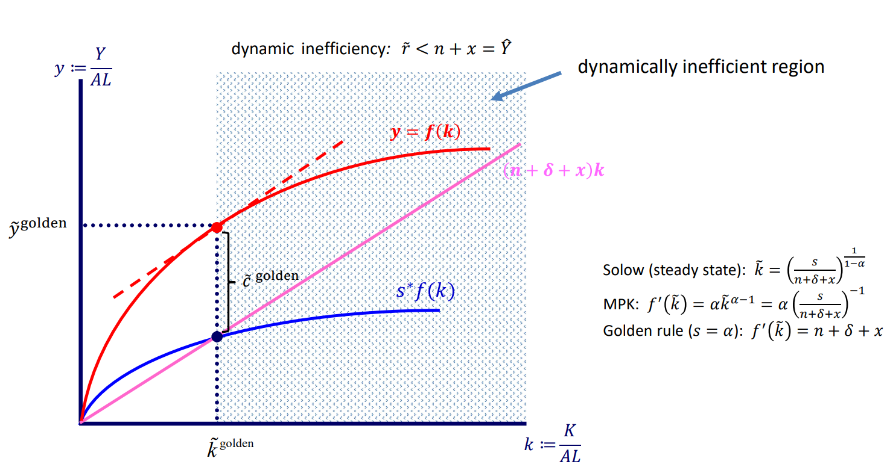
Comparing the three models. The same Golden Rule benchmark \(\tilde r = n+x\) plays a different role in each framework:
- Solow. The savings rate \(s\) is exogenous. If you choose \(s\) above \(s_{\text{gold}} = \alpha\), the steady state lies to the right of \(\tilde k_{\text{gold}}\) and \(\tilde r < n+x\). Inefficiency is the modeller’s choice: pick a different \(s\) and the problem disappears.
- Ramsey. The savings rate is endogenous and chosen by an optimizing household. The TVC rules out paths with \(\tilde r < n+x\) (these violate dynamic optimality, as discussed in the saddle-path analysis). The First Welfare Theorem holds, and the equilibrium is always on the efficient side: \(\tilde r \geq n+x\)
- OLG. The savings rate is also endogenous, but the optimization is only over a two-period life. The young save for retirement without internalizing that aggregate over-saving drives down the future interest rate (a pecuniary externality). The First Welfare Theorem fails, and \(\tilde r < n+x\) can persist as a competitive equilibrium. Compare the OLG market rate
\[ \tilde r = \frac{\alpha}{1-\alpha}(1+n)(2+\rho) \]
to the golden rule: $n+x$. If the market rate is lower, the economy is dynamically inefficient.Why does Ramsey not have the same problem like OLG? The infinitely-lived Ramsey household weighs the marginal cost of saving today against all future consumption benefits. If \(r < \rho\), the household simply stops saving. In OLG, the young household only weighs saving against its own retirement consumption – the indirect effect on future generations through capital accumulation is invisible to the saver. This generational disconnect is the source of the market failure.
Derivation of the optimal savings rate in the Solow model
The Golden Rule savings rate \(s_{\text{gold}}\) is the savings rate that maximizes steady-state consumption per effective worker \(\tilde c\).
Setup. Consider the Solow model with Cobb-Douglas production \(y = k^\alpha\), exogenous labor growth \(n\), technological progress \(x\), and depreciation \(\delta\). The steady-state capital intensity is
\[ \tilde k = \left(\frac{s}{n+\delta+x}\right)^{\frac{1}{1-\alpha}}, \]
and steady-state consumption per effective worker is
\[ \tilde c(s) = (1-s)\, \tilde k(s)^\alpha = \tilde k(s)^\alpha - (n+\delta+x)\, \tilde k(s), \]
where the second equality uses the steady-state condition \(s\, \tilde k^\alpha = (n+\delta+x)\,\tilde k\).
Maximization. Differentiate \(\tilde c\) with respect to \(\tilde k\) and set equal to zero:
\[ \frac{d\tilde c}{d\tilde k} = \alpha \tilde k^{\alpha-1} - (n+\delta+x) = 0 \quad \Longrightarrow \quad \underbrace{\alpha \tilde k^{\alpha-1}}_{f'(\tilde k)\, =\, \tilde r + \delta} = n+\delta+x. \]
Rearranging gives the Golden Rule condition:
\[ \boxed{\; \tilde r = n + x \;} \]
i.e., the net marginal product of capital equals the economy’s growth rate \(\hat Y = n + x\).
Plug the steady-state expression for \(\tilde k\) into the Golden Rule condition \(\alpha \tilde k^{\alpha-1} = n+\delta+x\):
\[ \alpha \left(\frac{s}{n+\delta+x}\right)^{-1} = n+\delta+x \quad \Longrightarrow \quad \alpha \cdot \frac{n+\delta+x}{s} = n+\delta+x. \]
Solving for \(s\):
\[ \boxed{\; s_{\text{gold}} = \alpha \;} \]
i.e., the Golden Rule savings rate equals the capital share. Empirically \(\alpha \approx 0.3\).
Interpretation.
- If \(s < \alpha\): the economy under-saves; raising \(s\) raises steady-state \(\tilde c\).
- If \(s = \alpha\): steady-state consumption is maximized.
- If \(s > \alpha\): the economy over-saves and is in the dynamically inefficient region; lowering \(s\) raises \(\tilde c\) for all generations (a Pareto improvement).
The Solow model treats \(s\) as exogenous, so reaching \(s_{\text{gold}}\) is a matter of policy / modeller’s choice. In Ramsey, the household’s optimization rules out \(s > \alpha\) via the TVC; in OLG, however, \(s > \alpha\) can arise as a competitive equilibrium outcome.
3 Endogenous Growth
Motivation
Neoclassical growth models treat technological progress as exogenous, leaving the main driver of long-run growth unexplained. Endogenous growth theory addresses this by modeling innovation, human capital accumulation, and knowledge spillovers (“externalities”) as outcomes of economic decisions. This allows productivity growth to arise within the model, driven by investment, learning, and creative destruction.\\\\
Endogenous growth models build a consistent framework for economic growth driven by **investment in physical capital**, human capital, and **R\&D**, without relying on an exogenous process. 3.1 The simplest form of endogenous growth: AK Model
The AK-Model refers to a production function of the form \(Y=AK\) which is obtained if one starts from Cobb-Douglas and \(\alpha\) approaches \(1\): \[Y=AK^\alpha L^{1-\alpha} \xrightarrow{\alpha \rightarrow 1}Y=AK\] { } In the Ramsey Model the Keynes Ramsey Rule (KRR) with an AK production function becomes \(\hat{C}^*= \hat{Y}^*=\frac{A-\delta-\rho}{\sigma}\). Consumption and tuhs output grow, if \(A-\delta-\rho>0\). We will see that due to the AK production function, policy can influence \(A\) in this and thereby influence growth: \\ Since \(r+\delta=\frac{\partial Y}{\partial K}\) (this is a general result, see chapter 1) we get \(\frac{\partial Y}{\partial K}=r+\delta\), due to \(Y=AK\), we see that \(\frac{\partial Y}{\partial K}=A=r+\delta\). Thus, policymakers can, by influencing \(r\), influence \(A\) which makes \(A\) endogenous. {} In the Solow Model the steady state is characterized by \(\dot{K}=sY-\delta K\) which yields the steady state growth rate (balanced growth path): \(\hat{K}^*=sY/K-\delta=\hat{Y}^*\). Plugging in the AK production function here, yields: \(\hat{K}^*=sA-\delta=\hat{Y}^*\) and growth is positive, if \(sA-\delta>0\). Following the same argument as above, the policymaker can influence \(A\) through \(r\) and thereby the model features endogenous growth.
3.2 Romer (1986): Simple Endogenous Growth Model
Households. A representative (mass one) Ramsey household with inelastic labor supply \(L\) and assets \(\mathcal{A}(t)\) earns income
\[ w(t)L + r(t)\mathcal{A}(t). \]
Consumption evolves according to the Keynes–Ramsey rule
\[ \frac{\dot{c}(t)}{c(t)} = \frac{r(t) - \rho}{\sigma}. \]
Firms. A continuum of firms \(i \in [0,1]\) produces output with technology
\[ Y(i,t) = K(i,t)^{\alpha} \bigl[A(t)L(i)\bigr]^{1-\alpha}, \quad \alpha \in (0,1), \ \delta \in (0,1). \]
Aggregate technology features Marshallian externalities (‘spill-overs across firms’):
\[ A(t) = \int_0^1 K(i,t)\, di. \]
Each firm solves: \(\max_{K(i),L(i)} \; K(i)^{\alpha}[A L(i)]^{1-\alpha} - wL(i) - (r+\delta)K(i)\) and we obtain the following FOCs:
\[ (1-\alpha)K(i)^{\alpha}[A L(i)]^{-\alpha}A - w = 0, \]
\[ \alpha K(i)^{\alpha-1}[A L(i)]^{1-\alpha} - (r+\delta) = 0. \]
In symmetric equilibrium we have: \(K(i)=K\), \(L(i)=L\) \(\forall\) \(i\) and hence \(A = \int_0^1 K(i)\,di = K.\)\\ Rewriting the FOC for capital:
\[ \alpha K^{\alpha-1}(K L)^{1-\alpha} = r+\delta \;\;\Rightarrow\;\; r(t) = \alpha L^{1-\alpha} - \delta. \]
And combining with the market clearing conditions:
\[ \int_0^1 L(i)\,di = L, \qquad \int_0^1 K(i,t)\,di = \mathcal{A}(t), \]
\((\)which imply the aggregate resource constraint \(\dot{K}(t) = Y(t) - \delta K(t) - C(t))\) yield the balanced growth path after plugging \(r(t) = \alpha L^{1-\alpha} - \delta\) into the KRR from above:
\[ \left(\frac{\dot{c}}{c}\right)^* = \left(\frac{\dot{K}}{K}\right)^* = \left(\frac{\dot{Y}}{Y}\right)^* = \frac{\alpha L^{1-\alpha} - \delta - \rho}{\sigma}. \]
The key implication is that knowledge spillovers (\(A(t)=K(t)\)) eliminate diminishing returns to capital at the aggregate level, generating endogenous growth with a constant equilibrium interest rate. Without these knowledge spillovers the typical chain of effects is: \(K\uparrow \rightarrow r\downarrow \rightarrow s\downarrow\), but here an increase in \(K\) also increases \(A\), thus: \(K\uparrow \rightarrow A\uparrow \rightarrow r\uparrow \rightarrow s \uparrow\). This second chain of effects offsets the decrease in \(s\) and may lead to forever ongoing capital accumulation. In other words: The marginal product of capital is not diminished, i.e. it does not fall (as strongly?, im unsure here) as \(K\) increases. This is somewhat similar to the AK-model effect. {}
3.2.1 A Note on Marshallian Externalities
Concept: Marshallian externalities imply that a firm’s efficiency increases with the intensity of surrounding economic activity. While internal production remains standard, Total Factor Productivity (TFP) is endogenized as a function of the aggregate environment. \\ Firm-Level Production: Individual firm \(i\) produces according to: \[\begin{equation} Y(i) = B K(i)^\alpha L(i)^{1-\alpha} \end{equation}\]
Endogenous TFP (The Modeling Shortcut): TFP (\(B\)) is assumed to depend on the average capital (\(\bar{K}\)) and average labor (\(\bar{L}\)) across all firms: \[\begin{equation} B = A \bar{K}^\beta \bar{L}^\gamma \quad (\beta, \gamma \geq 0) \end{equation}\]
Substituting this into the production function yields: \[\begin{equation} Y(i) = A \bar{K}^\beta \bar{L}^\gamma K(i)^\alpha L(i)^{1-\alpha} \end{equation}\]
Key Insights:
- Returns to Scale: Production exhibits CRS in private inputs (\(K(i), L(i)\)), allowing for perfect competition, but IRS in aggregate inputs due to the externalities.
- Special Case: The previous model (Romer 1986) is a restricted version of this framework where \(A=1\), \(\gamma=0\), and \(\beta=1\) (yielding \(B = \bar{K}\)).
3.3 Romer (1990): R&D driven growth
The model rests on three premises:
- Economic growth is driven by technological progress as well as capital accumulation.
- Technological progress results from deliberate actions taken by private agents who respond to market incentives.
- Technological knowledge is a non-rivalrous input.
3.3.1 Modelling Technological Change
Final output is produced according to \(Y = F(A, K, L)\), which exhibits constant returns to scale (CRS) in private inputs \(K\) and \(L\), i.e. $ F(A, K, L) = Y$ for any $ .$ Furthermore \(\frac{\partial F}{\partial X} > 0\) and \(\frac{\partial^2 F}{\partial X^2} < 0\) for all \(X \in \{A, K, L\}\). Under perfect competition, each factor is rewarded with its marginal product \(F_X(\cdot) := \frac{\partial F}{\partial X}\), so by Euler’s theorem output is fully exhausted: \[\begin{equation} Y = \underbrace{F_K(\cdot)}_{r+\delta} K + \underbrace{F_L(\cdot)}_{w} L. \end{equation}\]
This reveals a fundamental tension: perfect competition, CRS, and premise (2) are mutually exclusive. Agents who produce technological change must respond to market incentives and therefore need to be rewarded. Yet under CRS and perfect competition, output is entirely used up paying wages and rental rates, leaving nothing to compensate researchers. \
3.3.2 Structure of the model
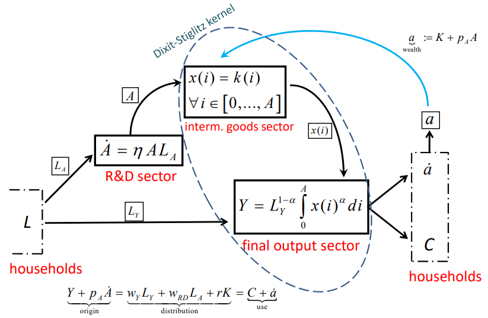
The Dixit-Stiglitz kernel refers to the goods sector featuring many intermediate goods \(x(i)\) which are imperfect substitutes and a final output sector which bundles the intermediate goods into the final output \(Y\). The production function of the monopolistic intermediate firms are \(x(i)=k(i)\), i.e. one unit of capital is used to produce one unit of intermediate good.
3.3.3 Households: Ramsey household with two assets.
The economy is populated by a continuum of mass one of identical households. Each household is endowed with \(L\) units of labor services per unit of time, which are supplied inelastically to the labor market.
- Household wealth comprises equity (\(p_A A\)) and raw capital (\(K\)):
\[ a = p_A* A + K. \]
- \(A\) is the number of intermediate good firms and \(p_A\) is the respective price, thus \(p_A* A\) is equity (Aktienvermögen)
- Revenues from issuing shares are used by the \(x\)-firm to purchase a blueprint.
- In equilibrium, the price of a blueprint equals the value of the firm.
- Raw capital \(K\) is rented out to the \(x\)-firms.
- The household chooses the consumption path \(C(t)\) to maximize discounted utility:
\[ \max \int_0^\infty \frac{C(t)^{1-\sigma}-1}{1-\sigma}\, e^{-\rho t}\, dt. \]
- Optimal consumption obeys the Keynes-Ramsey rule (KRR):
\[ \frac{\dot{C}(t)}{C(t)} = \frac{r-\rho}{\sigma}. \]
The value of a firm
This gives firms a positive value: \(p_A\) represents the value of the infinite discounted income stream of the firm. Note that in standard neoclassical theory, firms do not make profits in equilibrium, so the value of the firm would be zero, which is not the case here.
3.3.4 Final-output sector
The final-output sector (\(Y\)-sector) consists of firms producing a homogeneous good \(Y\) under perfect competition. The production technology is given by
\[ Y = L_Y^{1-\alpha} \int_0^A x(i)^\alpha \, di \]
where \(i \in [0,A]\) is the index of intermediate goods, \(A\) denotes the ``number’’ of types of intermediate goods, and \(x(i)\) is the quantity of intermediate goods of type \(i\).
- Note that the intermediate goods are machines: they serve as input factors for the final-good firm (think of shovels, pickaxes, machines, etc.). Intermediate goods are not consumption goods, and the final firm is not a ``goods bundler’’
- \(A\) represents the number of intermediate firms, i.e. machines in the economy. A larger \(A\) means more intermediate firms with different technologies, which raises \(Y\).
Reduced-form technology. Imposing a symmetric equilibrium \(x(i) = x \;\forall\, i \in [0,\dots,A]\) and the market-clearing condition for raw capital (\(K = Ak = Ax\)), the production function reduces to
\[ Y = L_Y^{1-\alpha} \int_0^A x(i)^\alpha \, di \;\xrightarrow{\;x(i)=x\;} \; Y = L_Y^{1-\alpha} A x^\alpha \;\xrightarrow{\;K=Ax\;} \; Y = (A L_Y)^{1-\alpha} K^\alpha. \]
- This is a Cobb-Douglas technology with labor-augmenting technical change.
- Increasing \(A\) while holding \(K = Ax\) constant (by reducing \(x\) as \(A\) rises, i.e. there are more smaller firms) boosts the productivity of labor.
- The technology captures the basic idea that ``division of labor and specialization’’ makes production more efficient
- The constraint \(K = Ax\) is crucial: it shows that the result ``more \(A\) is better’’ holds even though the total amount of input factor is fixed. With \(A = 1\), diminishing returns set in much faster than with, say, \(A = 3\) specialization across more varieties delays the curvature of the production function.
3.3.5 Intermediate goods sector
The intermediate goods sector consists of producers who manufacture differentiated intermediate goods \(x(i)\). The production technology is
\[ x(i) = k(i), \]
i.e., it takes one unit of ``raw capital’’ to produce one unit of any \(x(i)\). This is a trivial constant-returns-to-scale production function. The marginal cost of any \(x\) therefore equals \(r\), the rental price of capital.
- Before producing and marketing \(x\), firms must purchase a blueprint (design). The blueprint acts as a fixed cost of market entry: a firm needs a blueprint in order to produce a new machine.
- The \(x\)-market is monopolistically competitive: there is a large number of producers (one producer per variety) offering imperfect substitutes.
- \(x\)-producers sell intermediate goods \(x(i)\) to \(Y\)-producers by charging a price \(p(i)\).
Note: The \(x(i)\) are symmetric with regard to production technology and with regard to the way they enter into the production function of the final-output good. They are differentiated only in the sense that they are considered imperfect substitutes from the user’s perspective, implying that ``convex combinations are superior’’.
3.3.5.1 Flow of payments between HH, \(x\)-producer, and \(Y\)-producer.
The interaction between households, intermediate-goods producers, and final-output producers can be summarized as a circular flow:
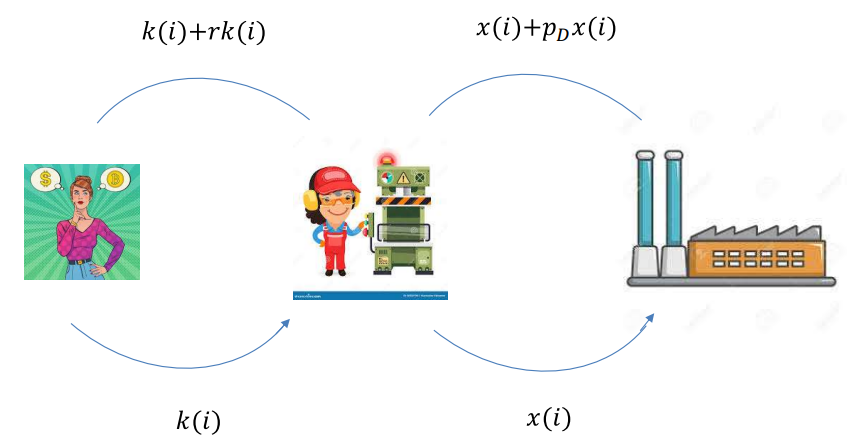
- The \(x\)-producer rents differentiated machines to the \(Y\)-producers. At the end of the period, the \(Y\)-producer returns these machines plus the rental payment.
- The \(x\)-producer then returns raw capital (transforming \(x\)’s back into \(k\)) plus the rental payment to the household. The difference between revenues and costs is the firm’s profit.
The Role of $A$: Returns to Specialization
Consider the discrete version of the production function with intermediate goods index \(i \in \{1, \dots, A\}\):
\[ Y = L^{1-\alpha} \sum_{i=1}^{A} x_i^\alpha, \qquad 0 < \alpha < 1, \]
subject to the resource constraint
\[ \sum_{i=1}^{A} x_i = K, \]
i.e., the total amount of raw capital available is fixed at \(K\). Now compare three economies that all share the same total input \(K\) but differ in the number of intermediate-goods varieties \(A\): \[\begin{align*} A=1: \quad & Y = L^{1-\alpha} K^\alpha \ $$2pt] A=2: \quad & Y = L^{1-\alpha} \left[ \left(\tfrac{1}{2} K\right)^\alpha + \left(\tfrac{1}{2} K\right)^\alpha \right] = L^{1-\alpha} \, 2^{1-\alpha} K^\alpha \\[2pt] A=3: \quad & Y = L^{1-\alpha} \left[ \left(\tfrac{1}{3} K\right)^\alpha + \left(\tfrac{1}{3} K\right)^\alpha + \left(\tfrac{1}{3} K\right)^\alpha \right] = L^{1-\alpha} \, 3^{1-\alpha} K^\alpha \end{align*}\] The total amount of intermediate goods \(A x_i = K\) is always the same; what changes is only how this fixed input is spread across varieties. Yet output \(Y\) is strictly higher the larger is \(A\). The reason is the concavity of \(x_i^\alpha\) (with \(\alpha < 1\)): splitting a fixed input across more varieties avoids diminishing returns within each variety. With \(A=1\), diminishing returns set in immediately; with \(A=3\), the same total \(K\) is distributed over three varieties, each operating in a less-saturated region of its production curve.
3.3.6 R&D Sector
Firms in the R&D sector search for ideas i.e. blueprints / designs, needed by firms for market entry. The market for blueprints is perfectly competitive. Note that the model captures variety expansion, not quality expansion. \
The R&D technology is given by [ = {} {} _{} $$
where \(\dot{A}\) denotes the number of newly invented machine types per unit of time.
- \(A\) carries two meanings simultaneously: (1) the number of machine types which is a technological variable and (2) a measure of knowledge. The latter generates the intertemporal knowledge spill-over, i.e. existing knowledge \(A\) raises the productivity of researchers \(L_A\), so \(\dot{A}\) is self-amplifying (premise iii).
- \(\rightarrow\) Because \(A\) is a stock variable (the number of machine types existing at a point in time), whereas \(Y\) is a flow variable. The R&D technology describes the rate at which new types are added, hence \(\dot{A}\).
3.3.6.1 Double knife-edge restriction.
The partial elasticities of \(A\) and \(L_A\) in the production of \(\dot{A}\) are both equal to unity:
\[ \text{(i)} \quad \frac{\partial \ln \dot{A}}{\partial \ln A} = 1 \qquad \text{and} \qquad \text{(ii)} \quad \frac{\partial \ln \dot{A}}{\partial \ln L_A} = 1. \]
3.3.7 General Equilibrium and Reduced Dynamic System
A general (market) equilibrium for this economy consists of time paths for
\[ \{L_Y(t),\, L_A(t),\, \{x(i,t)\}_{i=0}^{A},\, A(t),\, K(t),\, Y(t),\, a(t),\, C(t)\}_{t=0}^{\infty} \]
and
\[ \{w_Y(t),\, w_{RD}(t),\, r(t),\, p_A(t),\, \{p(i,t)\}_{i=0}^{A}\}_{t=0}^{\infty} \]
such that:
- Final goods producers, intermediate goods producers, and R&D firms maximize profits \(\forall\, t \in [0,\infty]\).
- Households maximize lifetime utility \(U = \int_0^\infty u(c) \cdot e^{-\rho t}\, dt\).
- The capital market no-arbitrage condition holds:
\[ \frac{\dot{p}_A}{p_A} + \frac{\pi}{p_A} = r \quad \forall\, t \in [0,\infty]. \]
The household holds two assets (equity and raw capital) and must earn the same return on both. The return on equity is the sum of the **capital gain** $\dot{p}_A/p_A$ and the **dividend yield** $\pi/p_A$, which must equal the rental rate $r$ on raw capital. Otherwise the household would shift its entire portfolio into the higher-yielding asset.- Capital markets clear: \(K(t) = \int_0^A k(i)\, di\), and issued shares \(p_A(t) A(t)\) are held by the household \(\forall\, t \in [0,\infty]\).
- Labor market clears: \(L(t) = L_Y(t) + L_A(t) \quad \forall\, t \in [0,\infty]\).
- Goods markets clear: \(x_S(i) = x_D(i) \;\forall\, i \in [0,A]\) and \(Y(t) = I(t) + C(t) \quad \forall\, t \in [0,\infty]\).
The equilibrium conditions can be condensed into a system of 6 equations in 6 endogenous variables: \[\begin{align*} \dot{C} &= \frac{C}{\sigma}(r-\rho) &&\text{(Keynes-Ramsey rule)} \\ \dot{p}_A &= r \cdot p_A - \pi &&\text{(no-arbitrage condition)} \\ \dot{A} &= \eta A L_A &&\text{(R\&D technology)} \\ \dot{a} &= r \cdot a + w \cdot L - C &&\text{(wealth accumulation)} \\ a &= p_A \cdot A + K &&\text{(wealth composition)} \\ \underbrace{(1-\alpha)(L-L_A)^{-\alpha} A \left(\tfrac{K}{A}\right)^\alpha}_{w_Y} &= \underbrace{p_A \eta A}_{w_{RD}} &&\text{(labor-market arbitrage)} \end{align*}\]
3.3.7.1 Endogenous variables.
3.3.7.2 Equilibrium relations
\[ r = \alpha^2 \frac{Y}{K}; \qquad w = (1-\alpha)\frac{Y}{L-L_A}; \qquad \pi = (1-\alpha)\alpha \frac{Y}{A}; \qquad Y = A^{1-\alpha}(L-L_A)^{1-\alpha} K^\alpha. \]
3.3.8 Long-run growth rate
Along a balanced growth path, the Romer model is equivalent to a neoclassical growth model with labor-augmenting technical progress. Recall the reduced form
\[ Y = (A L_Y)^{1-\alpha} K^\alpha. \]
Setting up the reduced dynamic system shows that this is equivalent to a Ramsey model (Use \(\dot{K}\), \(\dot{C}\), and \(\dot{A}\) equations).
On the balanced growth path, all variables grow at the same rate \(g\):
\[ \hat{Y}^* = \hat{K}^* = \hat{C}^* = \hat{A}^* = g, \qquad \text{where } \hat{X} := \frac{\dot{X}}{X} \text{ for all } X \in \{Y, K, C, A\}. \]
The long-run growth rate of \(A\) (recall \(\dot{A} = \eta A L_A\)) reads
\[ \hat{A}^* = \eta L_A^*. \]
The interesting question therefore concerns the determination of \(L_A^*\), since it pins down the long-run growth rate.
3.3.9 Solution strategy for the balanced growth path
The steady-state growth rate is determined by combining a production-side and a consumption-side relation:
- The labor-market equilibrium condition \(w_Y = w_{RD}\) yields a relation \(r_{\text{prod}} = f(g)\) describing equilibrium on the production side.
- The Keynes-Ramsey rule yields \(r_{\text{cons}} = \sigma g + \rho\), describing equilibrium on the consumption side.
- Simultaneous equilibrium on both sides (\(r_{\text{prod}} = r_{\text{cons}}\)) then allows determination of \(r\) and \(g\).
3.3.10 Equilibrium in the labor market $w_Y = w_{RD
$} Under perfect competition, labor earns its value marginal product (note that the final-good price is the numéraire \(p_Y = 1\)):
\[ w_Y = p_Y \frac{\partial Y}{\partial L_Y} = (1-\alpha) L_Y^{-\alpha} A x^\alpha, \]
recalling that in symmetric equilibrium the technology reads \(Y = L_Y^{1-\alpha} A x^\alpha\). For the R&D sector, the wage equals the value of the marginal contribution to invention:
\[ w_{RD} = p_A \frac{\partial \dot{A}}{\partial L_A} = p_A \eta A. \]
The remaining task is to determine the price of blueprints \(p_A\).
3.3.11 Price of a blueprint and equilibrium profits
Since \(\pi\) and \(r\) are constant in the steady state, the blueprint price equals the present value of the firm’s profit stream:
\[ p_A(t) = \int_t^\infty \underbrace{\pi(\tau)}_{\text{profit at }\tau \geq t} \cdot \underbrace{e^{-\int_t^\tau r(u)\,du}}_{\text{cumulative discount factor}} d\tau. \]
With both \(\pi\) and \(r\) constant, this simplifies to
\[ p_A(t) = \int_t^\infty \pi e^{-r(\tau - t)}\,d\tau = \frac{\pi}{r}. \]
Key Result: Price of a Blueprint
In the steady state, the blueprint price equals the discounted profit stream of the intermediate-goods firm:
\[ \boxed{\, p_A = \frac{\pi}{r} \,} \]
This pins down the value of the firm and is the link between the R&D sector and the rest of the model.
3.3.11.1 Profit of the \(x\)-producer.
The intermediate-goods firm earns
\[ \pi = \underbrace{p_D(x)}_{\substack{\text{rental price paid}\\\text{by }Y\text{-producer}}} x - r x, \qquad \text{with } p_D(x) = \alpha L_Y^{1-\alpha} x^{\alpha-1}. \qquad (**) \]
Since the \(x\)-producer is a monopolist in its variety, it chooses the supply price as a markup \(1/\alpha\) over marginal cost \(r\):
\[ p_S = \frac{1}{\alpha} r. \]
In equilibrium \(p_D = p_S\), hence \(r = \alpha p_S\), which combined with \((**)\) gives equilibrium profits
\[ \pi = (p_D - \alpha p_S) x = (1-\alpha) p_D x = (1-\alpha)\alpha L_Y^{1-\alpha} x^\alpha. \]
Derivation: Demand Curve $p_D(x) = \alpha L_Y^{1-\alpha} x^{\alpha-1}$
The demand curve for intermediate good \(i\) follows from the final-good producer’s profit-maximization problem.
Discrete case. The \(Y\)-producer solves
\[ \max_{x_i} \; L^{1-\alpha} \sum_{i=1}^A x_i^\alpha - \sum_{i=1}^A p_i x_i. \]
The first-order condition with respect to \(x_i\) gives
\[ \alpha L^{1-\alpha} x_i^{\alpha-1} = p_i \quad \Longrightarrow \quad p_D(x_i) = \alpha L^{1-\alpha} x_i^{\alpha-1}. \]
Continuous case. The problem becomes
\[ \max_{x(\cdot)} \int_0^A \left[ L_Y^{1-\alpha} x(i)^\alpha - p(i) x(i) \right] di. \]
Differentiating under the integral sign yields the same inverse demand function
\[ p(i) = \alpha L_Y^{1-\alpha} x(i)^{-\alpha+1\cdot(-1)} = \alpha L_Y^{1-\alpha} x(i)^{\alpha-1}. \]
The \(x\)-producer takes this demand curve as given when choosing its profit-maximizing supply price.
Derivation: Monopoly Markup $p_S = r/\alpha$
The \(x\)-producer is a monopolist in its variety and faces the inverse demand curve \(p_D(x) = \alpha L_Y^{1-\alpha} x^{\alpha-1}\) derived from the \(Y\)-producer’s optimization. Its profit-maximization problem is
\[ \max_x \; \pi = p_D(x)\, x - r x = \alpha L_Y^{1-\alpha} x^\alpha - r x, \]
where the marginal cost of producing one unit of \(x\) equals the rental rate \(r\) (recall the linear technology \(x(i) = k(i)\)).
The first-order condition with respect to \(x\) is
\[ \alpha^2 L_Y^{1-\alpha} x^{\alpha-1} - r = 0 \quad \Longrightarrow \quad \alpha \cdot \underbrace{\alpha L_Y^{1-\alpha} x^{\alpha-1}}_{= p_S} = r. \]
Solving for the optimal supply price:
\[ \boxed{\; p_S = \frac{1}{\alpha} r \;} \]
The monopolist charges a markup of \(1/\alpha > 1\) over marginal cost \(r\). The markup is larger the smaller is \(\alpha\), i.e., the less substitutable the varieties are – standard monopoly intuition.
3.3.12 Equilibrium on the production side
Plugging \(p_A = \pi/r\) and the equilibrium profit into \(w_{RD} = p_A \eta A\), and equating with \(w_Y\):
\[ \underbrace{(1-\alpha) L_Y^{-\alpha} A x^\alpha}_{\partial Y/\partial L_Y} \;=\; \underbrace{\frac{(1-\alpha)\alpha L_Y^{1-\alpha} x^\alpha}{r}}_{p_A} \cdot \underbrace{\eta A}_{\partial \dot{A}/\partial L_A}. \]
Solving for \(r\):
\[ r = \eta \alpha L_Y. \]
Using labor-market clearing \(L_Y = L - L_A\) and the R&D technology in steady state \(L_A = g/\eta\):
\[ r = \eta \alpha L_Y = \eta \alpha (L - L_A) = \eta \alpha L - \alpha g. \]
This relation describes equilibrium on the production side. Note that \(g\) and \(r\) are negatively related: faster growth requires more researchers \(L_A\), which leaves fewer workers for the final-goods sector, lowering the marginal product of capital and hence \(r\).
3.3.13 Steady-state growth rate
Solving the production-side relation \(r = \eta\alpha L - \alpha g\) together with the consumption-side Keynes-Ramsey relation \(r = \sigma g + \rho\) for \(g\):
\[ \eta\alpha L - \alpha g = \sigma g + \rho \quad \Longrightarrow \quad g = \frac{\eta\alpha L - \rho}{\sigma + \alpha}. \]
Since growth cannot turn negative in this model, the complete solution is
Key Result: Romer Steady-State Growth Rate
\[ \boxed{\; g_M = \begin{cases} \dfrac{\eta\alpha L - \rho}{\sigma + \alpha} & \text{for } \eta\alpha L > \rho \\[4pt] 0 & \text{for } \eta\alpha L \leq \rho \end{cases} \;} \]
Threshold condition. Long-run growth requires the economy to be large enough in the sense \(\eta \alpha L > \rho\) (critical threshold for labor).
Scale effect. Provided \(\eta \alpha L > \rho\), larger economies (size measured by \(L\)) grow at a higher rate. Intuition: more researchers can be employed without sacrificing too much final-good production, so \(\dot{A}\) is higher.
Nice to Know: Romer's H vs. L
In the original Romer (1990) paper, there is human capital (\(H\)) and unskilled labor (\(L\)), so that both the threshold effect and the scale effect are associated with human capital rather than (unskilled) labor.
3.3.14 Graphical illustration: labor market equilibrium.
Varying only \(L_Y\) (holding \(x\), \(A\), \(r\) constant), the wage in the \(Y\)-sector \(w_Y = (1-\alpha) L_Y^{-\alpha} A x^\alpha\) is decreasing in \(L_Y\), while the R&D wage \(w_{RD} = \frac{(1-\alpha)\alpha L_Y^{1-\alpha} x^\alpha}{r} \eta A\) is increasing in \(L_Y\). Their intersection determines the equilibrium allocation between \(L_Y\) and \(L_A\) (recall \(L_A = L - L_Y\)).
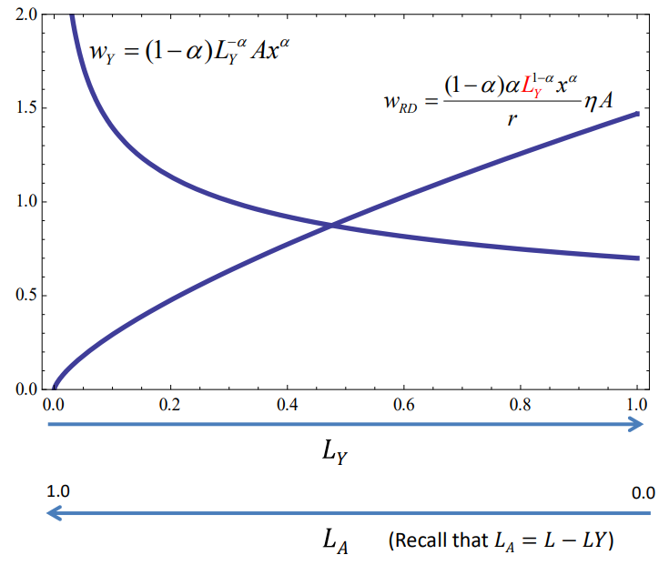
3.3.14.1 Why does $w_{RD
$ increase in \(L_Y\)?} A higher \(L_Y\) raises the marginal product of intermediate goods \(x\), which raises profits \(\pi\) of the \(x\)-producer, which raises the value \(p_A = \pi/r\) of a blueprint, which in turn raises the value marginal product of labor in R&D (\(w_{RD} = p_A \eta A\)).
3.3.14.2 Wage subsidy.
If the government subsidizes R&D wages at rate \(s_A\), the FOC of the typical R&D firm becomes
\[ (1-s_A) w_{RD} = \frac{(1-\alpha)\alpha L_Y^{1-\alpha} x^\alpha}{r} \eta A \quad \Longrightarrow \quad w_{RD} = \frac{(1-\alpha)\alpha L_Y^{1-\alpha} x^\alpha}{r(1-s_A)}\eta A. \]
The \(w_{RD}\)-curve shifts up, the equilibrium moves toward higher \(L_A\) and lower \(L_Y\), raising the steady-state growth rate.
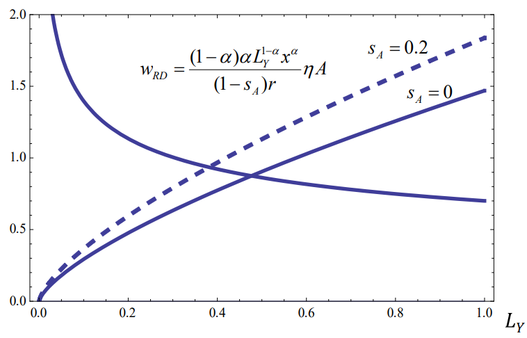
Derivation: Effect of an R&D Wage Subsidy
Suppose the government subsidizes R&D wages at rate \(s_A\). The subsidy is paid to the R&D firm: workers still receive the market wage \(w_{RD}\), but the firm only pays \((1-s_A) w_{RD}\) per researcher, with the government covering the remainder \(s_A w_{RD}\). \\ R&D firm’s problem, taking \(w_{RD}\) as given:
\[ \max_{L_A} \; \Big\{\, p_A \dot{A}(L_A) \;-\; (1-s_A)\, w_{RD}\, L_A \,\Big\}, \qquad \text{with } \dot{A}(L_A) = \eta A L_A. \]
The first-order condition with respect to \(L_A\) is
\[ p_A \cdot \frac{\partial \dot{A}}{\partial L_A} = (1-s_A) w_{RD} \quad \Longrightarrow \quad p_A \eta A = (1-s_A) w_{RD}. \]
Solving for \(w_{RD}\) and substituting \(p_A = \pi/r = (1-\alpha)\alpha L_Y^{1-\alpha} x^\alpha / r\):
\[ w_{RD} = \frac{p_A \eta A}{1-s_A} = \frac{(1-\alpha)\alpha L_Y^{1-\alpha} x^\alpha}{r(1-s_A)}\, \eta A. \]
The subsidy corrects the two market imperfections (knowledge spill-over + incomplete appropriation of consumer surplus) that cause the decentralized growth rate \(g_M\) to fall short of the socially optimal \(g_S\). The subsidy pushes \(g_M\) towards \(g_S\).
3.3.14.3 Graphical determination of \(g\) and \(r\).
The simultaneous equilibrium can be plotted in \((r,g)\)-space. The production-side relation \(g = (\eta\alpha L - r)/\alpha\) is downward-sloping; the consumption-side relation \(g = (r-\rho)/\sigma\) is upward-sloping. Their intersection determines \((r^*, g^*)\).
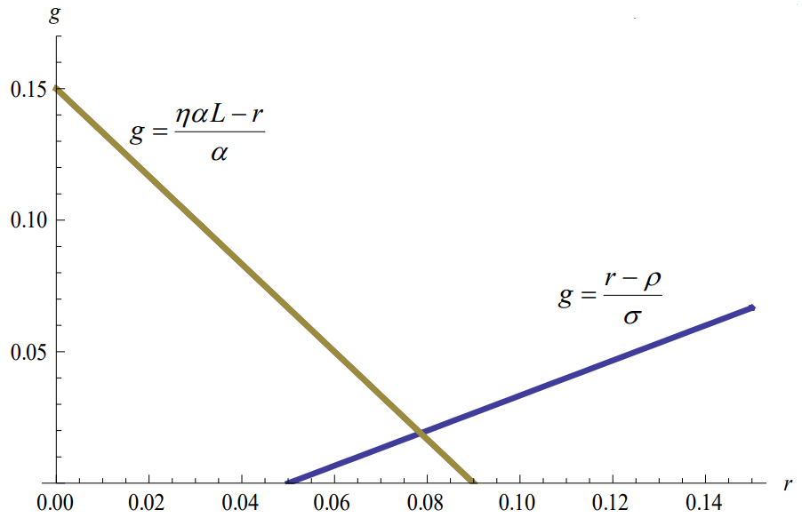
Exercise: Effect of $s_A = 0.2$ on the $g$-$r$ Diagram
With a wage subsidy, the production-side relation becomes
\[ g = \frac{\eta\alpha L - r(1-s_A)}{\alpha}, \]
while the consumption-side relation \(g = (r-\rho)/\sigma\) is unaffected. \\ Graphical effect: The production-side curve rotates: its slope flattens from \(-1/\alpha\) to \(-(1-s_A)/\alpha\), and its \(r\)-intercept shifts outward from \(\eta\alpha L\) to \(\eta\alpha L/(1-s_A)\). The consumption-side curve stays fixed. \\ Solving simultaneously yields
\[ g^* = \frac{\eta\alpha L - \rho(1-s_A)}{\sigma(1-s_A) + \alpha}, \qquad r^* = \frac{\sigma\eta\alpha L + \alpha\rho}{\sigma(1-s_A) + \alpha}. \]
Both \(g^*\) and \(r^*\) rise relative to the no-subsidy benchmark. The subsidy lowers the effective labor cost of R&D firms, who hire more researchers. Hence \(L_A\) rises, \(\dot{A} = \eta A L_A\) rises, and so does steady-state growth \(g\). The interest rate rises along the Keynes-Ramsey rule and faster consumption growth requires a higher return on saving to keep households on their optimal path. Equivalently, on the production side, less labor in the \(Y\)-sector raises the marginal product of capital and thus \(r\).
3.3.15 Market imperfections and policy implications
The decentralized solution \(g_M\) is generically inefficient. Solving the social planner’s problem (this is an exercise) yields
Key Result: Social Planner's Solution
\[ g_S = \begin{cases} \dfrac{\eta L - \rho}{\sigma} & \text{for } \eta L > \rho \\[4pt] 0 & \text{for } \eta L \leq \rho \end{cases} \]
The decentralized growth rate is too low: \(g_M < g_S\).
3.3.15.1 Two market imperfections related to R&D.
- Intertemporal knowledge spill-over effect. Each new blueprint raises future research productivity (recall the R&D technology \(\dot{A} = \eta A L_A\)). This social benefit is not reflected in the market price \(p_A = \pi/r\): the inventor only captures the private profit stream, not the contribution to future researchers’ productivity.
- Incomplete appropriation of consumer surplus. The typical intermediate-goods producer realizes monopoly profits – this imperfection is in fact necessary for market-based R&D, since otherwise the blueprint would have zero value. However, the monopolist cannot appropriate the entire consumer surplus. Hence, again, the market price \(p_A = \pi/r\) falls short of the social value of the blueprint.
Both imperfections imply that R&D investment is suboptimally low in the decentralized equilibrium. The deviation of the decentralized solution from the first-best calls for government intervention, e.g., R&D subsidies (such as the wage subsidy \(s_A\) analyzed above) that align \(g_M\) with \(g_S\).
4 Methods
4.1 Hamiltonian
For a generic continuous-time optimal control problem of the form \[\begin{equation} \max_{\{u(t)\}} \int_0^\infty e^{-\rho t} I\bigl(x(t), u(t)\bigr)\,\mathrm{d}t \quad \text{subject to} \quad \dot{x}(t) = g\bigl(x(t), u(t)\bigr), \quad x(0) \text{ given}, \end{equation}\] we define the current-value Hamiltonian \[\begin{equation} \mathcal{H}(x, u, \lambda) = I(x, u) + \lambda\, g(x, u), \end{equation}\] where \(\lambda(t)\) is the costate variable (the continuous-time shadow value of the state \(x\)). The necessary optimality conditions are \[\begin{align} \mathcal{H}_u &= 0, \label{eq:foc_u}\\ \dot{x} &= g(x, u), \label{eq:state}\\ \dot{\lambda} &= \rho\lambda - \mathcal{H}_x. \label{eq:costate} \end{align}\] Together with the transversality condition (TVC) \[\begin{equation} \lim_{t\to\infty} e^{-\rho t}\,\lambda(t)\,x(t) = 0, \end{equation}\] these conditions pin down the unique optimal path.
4.1.0.1 Household example.
For a representative household with CRRA utility maximising \(\int_0^\infty e^{-\rho t} u(c)\,\mathrm{d}t\) subject to \(\dot{k} = rk + w - c\), the current-value Hamiltonian is \(\mathcal{H} = u(c) + \lambda(rk + w - c)\). The FOCs yield \(\lambda = u'(c)\) and \(\dot{\lambda} = \lambda(\rho - r)\), which combine to give the continuous-time Euler equation \[\begin{equation} \frac{\dot{c}}{c} = \frac{1}{\sigma}(r - \rho). \end{equation}\] For the Ramsey model, replacing \(r\) with the net marginal product of capital \(f'(k)-\delta\) gives the canonical two-dimensional system \[\begin{align} \dot{k} &= f(k) - c - \delta k, \\ \frac{\dot{c}}{c} &= \frac{1}{\sigma}\bigl(f'(k) - \delta - \rho\bigr). \end{align}\]
4.2 Solving a System of ODEs
Consider a linear (or linearised) continuous-time system of the form \[\begin{equation} \dot{\mathbf{z}}(t) = A\,\mathbf{z}(t), \end{equation}\] where \(\mathbf{z}\) collects deviations of the variables from their steady-state values. The solution procedure has four steps.
- Find the eigenvalues. Solve \(\det(A - \mu I) = 0\) for the eigenvalues \(\mu_1, \mu_2\) of \(A\).
- Find the eigenvectors. For each \(\mu_i\), solve \((A - \mu_i I)\mathbf{v}_i = \mathbf{0}\) for the eigenvector \(\mathbf{v}_i\).
- Write the general solution. \[\begin{equation} \mathbf{z}(t) = \alpha_1\, e^{\mu_1 t}\,\mathbf{v}_1 + \alpha_2\, e^{\mu_2 t}\,\mathbf{v}_2. \end{equation}\]
- Apply boundary conditions. Use the initial condition \(\mathbf{z}(0)\) and any terminal/transversality condition to determine \(\alpha_1, \alpha_2\).
4.2.0.1 Stability.
The nature of the eigenvalues determines local dynamics:
- If all eigenvalues have negative real parts, the steady state is locally stable (a node or spiral).
- If the eigenvalues have opposite signs (\(\mu_1 < 0 < \mu_2\)), the steady state is a saddle point.
4.2.0.2 Saddle-path stability in economic models.
In optimisation-based macro models, the state variable \(k\) is predetermined (initial condition given), while the control variable \(c\) is a free ``jump’’ variable. The optimal solution therefore requires setting the coefficient on the unstable eigenvector to zero (\(\alpha_2 = 0\), corresponding to \(\mu_2 > 0\)). This selects the unique saddle path — the only trajectory compatible with the TVC — and pins down the correct initial value \(c_0\).
4.3 random
inelastically labor supply means a vertival line in a w - L plot (same L for any w). -> this applies to ramsey, solow, romer
\item *Stock vs.\ flow:* A stock is measured at a given point in time; a flow is measured over a period of time. GDP is a flow (``GDP in 2024 was \dots''); the amount of money in your pocket right now is a stock.
\item *Side note on labor productivity:* *Average* productivity of labor is $Y/L$, while *marginal* productivity of labor is $\partial Y/\partial L$.